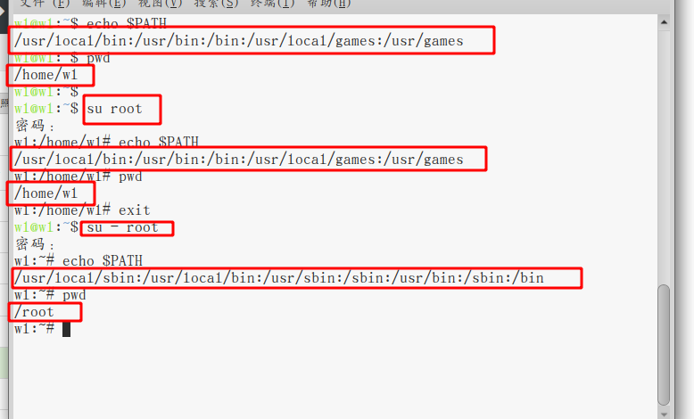
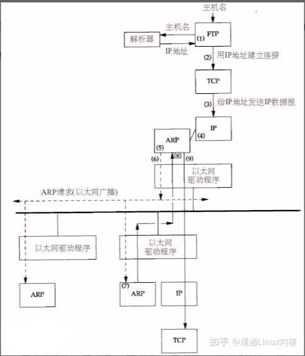
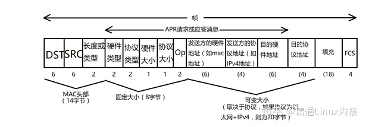
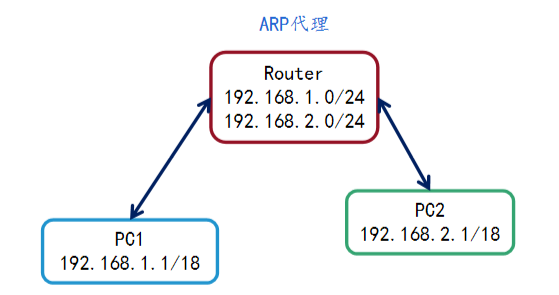

常用命令¶
1. grep¶
grep：查找匹配模式的行，grep对文本内容的处理是以行为单位，输出也是输出匹配的行。grep：仅支持基本正则表达式
egrep：支持扩展正则表达式。等同于
grep -Efgrep：不支持正则表达式（所有元字符都当作普通字符处理）。等同于
grep -F。如fgrep "^test" test.txt：匹配的是包含 ^test 的行，而在grep中匹配的是以test开头的行。基本正则表达式和扩展正则表达式
基本正则表达式（BRE）：只承认
^$.[]*这些是元字符，所有其他的字符都被识别为普通字符。扩展正则表达是（ERE）：在BRE的基础上增加了
(){}?+|等元字符。注：只有在用反斜杠进行转义的情况下，字符
(){}才会在扩展正则表达式（ERE）中被当作元字符处理，而在基本正则表达式（ERE）中，任何元字符前面加上反斜杠反而会使其被当作普通字符来处理。
语法：grep [选项1] [选项2]… 匹配内容 [文件1] [文件2]…
常用选项：
-F：不支持正则表达式 -E：支持ERE -P：支持Perl语言的正则表达式 -v：取反。 -i：忽略大小写 -n：显示匹配的行号 -w：匹配整个单词 -l： 打印包含匹配项的文件名，而不是文本行本身 # grep -l "first" *.txt：找出内容中含有first单词的.txt文件 -L：相似于-l 选项，但是只是打印不包含匹配项的文件名 # grep -l "first" *.txt：找出内容中不含有first单词的.txt文件 -A n：匹配行及匹配行的下面n行的内容（after） -B n：匹配行及匹配行上面面n行的内容(before) -C n：匹配行及匹配行的上面n行和下面n行的内容 -q：安静模式，不打印任何标准输出。如果有匹配的内容返回状态值0。 -d action：读取目录的方式。action可以为read/recurse/skip。read:可以认为是默认的模式，只读取文件进行过滤，读取到目录会报错；rescurse:递归过滤目录和子目录下的所有文件；skip:是目录就跳过，只读取文件进行过滤。 # grep -d read umask /etc/*：遇见目录时会报错 xxx:是一个目录，并不会读取，只读取文件进行过滤 # grep -d recurse umask /etc/：递归过滤目录和子目录下的所有文件 # grep -d skip umask /etc/* :遇见目录时会跳过，不会报错，只读取文件进行过滤 -r：等同于-d recurse递归搜索目录中的所有文件，将在当前目录及其子目录中的所有文件中搜索给定的模式。 -H：为输出行打印文件名 -h：输出时不显示文件名前缀 --label=LABEL：将给定<标签>作为标准输入文件名前缀，主要用于管道 # echo -e "hello\n007" | grep --label=test -H 007 # 输出： test:007 -m num：得到给定num次匹配后停止
2. sed¶
sed 命令是一个面向行处理的工具，它以“行”为处理单位，针对每一行进行处理，处理后的结果会输出到标准输出（STDOUT）。它不会对读取的文件做任何贸然的修改（除非加-i参数），而是将内容都输出到标准输出中。
sed的工作原理
sed命令是面向“行”进行处理的，每一次处理一行内容。处理时，sed 会把要处理的行存储在缓冲区中，接着用 sed 命令处理缓冲区中的内容，处理完成后，把缓冲区的内容送往屏幕。接着处理下一行，这样不断重复，直到文件末尾。这个缓冲区被称为“模式空间”（pattern space）。
sed命令语法：sed [参数] ‘<匹配条件> [动作]’ [文件名]
参数：
-n：仅显示sed处理过的行;-i：表示对文件进行编辑（不加-i只能看到处理后的结果不能修改文件）;-e：设置多个 command-r：支持扩展正则表达式（ERE）
匹配条件：
'/关键字/'关键字匹配，/可以换为@ # ！;'1,2'p数字行号匹配动作：
a：在匹配到的内容下一行增加内容 i：在匹配到的内容上一行增加内容 c：替换匹配到的当前行 d：删除匹配到的内容 s：替换匹配到的内容 p：打印，指定了行则打印指定行，未指定打印所有 r：将内容读入匹配到的行后面，如果匹配多行，则内容将显示在所有匹配行的下面
例：
echo -e "123\nabc\n454" | sed "2p" # 输出结果为： 123 abc abc 454 echo -e "123\nabc\n454" | sed -n "2p" # 输出结果为 123 abc 454
以上可以看出不加
-n参数时所有的原始文件内容都被输出来了，而且第二行被输出了两遍，但这就是 sed 命令的工作原理，它会不问青红皂白地把经过处理的行先输出出来，然后再执行后面的动作。-n选项会很严肃地警告 sed 命令：除非是明确表明要输出的行，否则不要给我胡乱输出。-n选项经常和p配合使用，其含义就是，输出那些匹配的行。
替换文件中的内容：
sed -i 's/old/new/g' fileg：全局替换;不加g只会替换每一行的第一个匹配到的内容;2g 3g...表示从每一行的第2,3…个匹配到的内容开始全部替换。sed -i '行号s/old/new/列号' file：替换第几行的第几个匹配到的内容。不加行号，表示替换每行匹配到的内容。
删除：
sed -i 'n1,n2d' 文件名sed -i '/^$/d' file #删除空白行 sed -i '$d' file #删除最后一行 sed -i '2,$d' file #删除第二行到最后一行 sed -i '/^test/d' file #删除所有一test开头的行
n=
sed .....：将sed的输出赋值给变量n（单引号扩起来）sed ':a;N;$!ba;s/\n//g' file：去除换行符，不常用，一般用tr命令sed 's/$//'：在每一行后面追加空。sed 's/ *//g'：将空格删除。*：空格星，代表多个空格。
3. awk¶
awk语法：
awk [ 选项 ] ' /模式/{操作} ' 文件名常用选项：
-F 指定域分隔符（默认为空格或tab键） -f 指定从脚本文件中读取awk命令 -v var=value 赋值一个用户定义变量，将外部变量传递给awk
例：自定义的变量
-v： awk -v test=”hello” -F: ‘{print test,$1}’在BEGIN{}模式自定义变量：awk -F ‘:’ BEGIN{test=”hello”}{print test,$1}’
模式：模式可以是以下任何一个：
/正则表达式/：使用通配符的扩展集。 关系表达式：使用运算符进行操作，可以是字符串或数字的比较测试。 模式匹配表达式：用运算符（匹配）和!（不匹配）。 BEGIN语句块、pattern语句块、END语句块
操作：操作由一个或多个命令、函数、表达式组成，之间由换行符或分号隔开，并位于大括号内，主要部分是：
变量或数组赋值
常用内置变量：
$n：显示当前行第n列内容n为0时表示显示当前行所有内容。多个n时，用逗号隔开。如：`{print $1,$2,...}` $NF： '{print $NF}'，打印最后一列的内容。'{print $(NF-1)}'，打印倒数第二列的内容，一次类推。 NR：'NR==1 {print}'，打印指定行(第一行)的内容(可以使用> < 等运算符打印大于/小于某行的内容)。‘{print NR}’打印出行号。 FS：输入文件的列分隔符，缺省是连续的空格和Tab。FS就是awk用来定义“列”的，设置变量 FS 与使用 -F 参数是一样的。 OFS：输出域分隔符 RS：读取文件时的行分隔符，默认值为\n，即以\n为换行符。 ORS：ORS则是awk输出时的行结束符，默认值为\n。就是每行记录后面增加一个ORS变量所设定的值。
例：
echo '1a2a3a4a5' | awk 'BEGIN{RS="a"}{print $1,$2}'：读取文件时以a为换行符。seq 5 | awk 'BEGIN{ORS="a"}{print $0}'：输出文件时每行后面增加一个a。
输出命令：
printprintfprintf(”%s”,$1)
print($1,$2)
在
printf中%s%c%d%f都是格式替代符：%s:字符串 %c:字符 %d:整数 %f:浮点数 %-10s 指一个宽度为10个字符（-表示左对齐，没有则表示右对齐），任何字符都会被显示在10个字符宽的字符内，如果不足则自动以空格填充，超过也会将内容全部显示出来。 %-4.2f 左对齐，占4个字符的宽度，格式化为小数，其中.2指保留2位小数。
内置函数
index(str,s):返回子字符串s在字符串str中的位置（位置从1开始）echo -e "good 111\ndog 222\npgine 333" | awk '{print index($1, "g")}' # 返回字符g在第一列中的位置
substr(str,end,len)：返回返回字符串str从end开始,长度为len的部分。len，可选的，省略表示截取到末尾（位置从1开始）echo "hello world" | awk '{print substr($1,3)}' # 截取字符串"hello world"第一列从3开始到末尾
控制流语句
BEGIN和END语法：
awk 'BEGIN{ commands } { commands1} {commands2}..... END{ commands }'执行过程
第一步：执行BEGIN{ commands }语句块中的语句； 第二步：从文件或标准输入(stdin)读取一行，然后执行{ commands }语句块，它逐行扫描文件，从第一行到最后一行重复这个过程，直到文件全部被读取完毕。有多个语句块时，会先扫描commands1的第一行，然后扫描 commands2的的一行.....扫描完后再回来扫描 commands1的第二行...... 第三步：当读至输入流末尾时，执行END{ commands }语句块。 BEGIN和END部分在awk中都仅执行一次。 BEGIN在程序一开始时, 改变awk分隔数据行的方式、设定变量的起始值、印出一行title。此时不需要读入任何数据行。 而END用来打印结尾信息或者用来输出统计信息等。
例：
echo -e '一:50件:200.00\n二:60件:300.00\n三:70件:400.00' > test.txt awk 'BEGIN{FS=":";print "统计销售金额";total=0} {print $3;total=total+$3;} END{printf "销售金额统计:%.2f\n",total}' test.txt 输出结果：首先执行BEGIN语句块中的语句，即以:为分隔符号，打印统计销售金额，变量赋值为0。然后执行中间的print语句，逐行扫描答应第三列的内容并且每行累加。最后执行END语句块的内容，打印出统计金额。 统计销售金额 200.00 300.00 400.00 销售金额统计:900.00
流程控制语句
if语句
awk -F ":" '{if ($1=="root") print $1;else print $2}' /etc/passwd：如果第一个参数是root，打印第一列内容容，否则打印第二列内容。awk -F ":" 'BEGIN {count=0} {if ($3>=50) count++} END{print count}' /etc/passwd：打印用户id大于等于50的(普通用户)用户数量。
while循环语句
awk 'BEGIN{num=1;total=0;while(num<=100){total+=num;num++}{print total}}'：1+..100
for循环语句
awk 'BEGIN{total=0;for(i=0;i<=100;i++){total+=i} {print total}}'：1+…100
4. scp¶
scp：基于ssh登陆进行安全的远程文件拷贝命令。scp bash.test bash@172.30.22.115::将文件拷到主机115的bash用户家目录下scp bash@172.30.22.115:~/bash.test ./bash.test.1:将主机115家目录下的文件拷贝到本机当前目录下
5. netcat¶
netcat作用：netcat命令，也被称为nc，是一个命令行工具，允许用户通过网络连接读写数据。它可以用来建立与服务器和客户端的连接，发送和接收数据，并执行其他各种与网络有关的任务。它通常用于网络故障排除、测试和通信。
常见用法：
6. run-parts¶
run-parts：遍历目标文件夹，执行第一层目录下的可执行权限的文件。在很多系统中，用户目录下都有cron.daily之类的文件夹，里面的可执行文件每天都会被执行一次。也就是说如果想添加一个每天都被执行的任务的话，在目录下放置该任务的脚本即可。
7. lsscsi¶
SCSI：SCSI(Small Computer System Interface)是一套完整的数据传输协议，其主要功能是在主机和存储设备之间传送命令、状态和块数据。
常见硬盘接口
IDE接口的硬盘：Integrated Drive Electronics，常见的2.5英寸IDE硬盘接口它的本意是指把“硬盘控制器”与“盘体”集成在一起的硬盘驱动器。
IDE代表着硬盘的一种类型，但在实际的应用中，人们也习惯用IDE来称呼最早出现IDE类型硬盘ATA-1，这种类型的接口随着接口技术的发展已经被淘汰了，而其后发展分支出更多类型的硬盘接口，比如ATA、Ultra ATA、DMA、Ultra DMA等接口都属于IDE硬盘
特点：低廉，兼容性强，性价比高，数据传输慢，不支持热插拔等等。
SCSI接口硬盘：SCSI并不是专门为硬盘设计的接口，是一种广泛应用于小型机上的高速数据传输技术。
SCSI接口具有应用范围广、多任务、带宽大、CPU占用率低，以及热插拔等优点，但较高的价格使得它很难如IDE硬盘般普及，因此SCSI硬盘主要应用于中、高端服务器和高档工作站中。
特点：传输速率高、读写性能好、可连接多个设备、可支持热插拔，但是价格相对来说比较贵
SATA接口类型：Serial Advanced Technology Attachment。使用SATA（Serial ATA）口的硬盘又叫串口硬盘，是未来PC机硬盘的趋势。
Serial ATA采用串行连接方式，串行ATA总线使用嵌入式时钟信号，具备了更强的纠错能力，与以往相比其最大的区别在于能对传输指令（不仅仅是数据）进行检查，如果发现错误会自动矫正，这在很大程度上提高了数据传输的可靠性。
特点：串行接口还具有结构简单、支持热插拔的优点
lsscsi命令lsscsi列出scsi/sata设备信息，比如硬盘驱动器，光盘驱动器。lsscsi返回值详解：[0:0:0:0] disk ATA QEMU HARDDISK 2.5+ /dev/sda [1:0:0:0] cd/dvd QEMU QEMU DVD-ROM 2.5+ /dev/sr0
第1列：id,[host:channel:id:lun]
第2列：设备类型
第3列：设备厂商
第4列：型号
第5列：版本信息
第6列：设备主节点名
8. umask¶
umaskumask 默认权限是用来给所有新建的文件和目录赋予初始权限的。
文件（或目录）的初始权限 = 文件（或目录）的最大默认权限 - umask权限
目录最大权限：777
文件最大权限：666。系统不允许你在创建一个文本文件时就赋予它执行权限，必须在创建后用chmod命令增加这一权限。目录则允许设置执行权限，这样针对目录来 说，umask中各个数字最大可以到7。
临时修改umask：
umask 033。重启或重新登陆系统，就会失效。如果想让修改永久生效，则需要修改对应的环境变量配置文件 /etc/profile。
9. pgrep¶
pgreppgrep是linux中常用的通过程序名称来查询进程的工具，一般是用来判断程序是否正在运行及查找正在运行进程的PID信息。
语法：
pgrep [option] [进程名]option
-l，--list-name：列出进程名称和进程ID -o，--oldest：仅显示最小(最早启动的进程)进程号 -n，--newest：仅显示最大(最新启动的进程)进程号 -u，--euid euid：仅列出有效用户相关的进程ID号 -U，- uid：仅匹配列出实际用户ID的进程 -P(大写)，--parent ppid：仅列出父进程ID的子进程号 -x，--exact(精确)：与进程中的命令名称精确匹配 -d，--delimiter(分隔符) ：指定每个进程ID间的分隔符(默认为换行符) -a，--list-full：列表显示进程的PID和进程所对应的程序以及运行时所带的参数。 -t，--terminal 【tty1】|【pts/0】：只显示指定控制终端下列出的进程ID。指定终端名称时没有“/ dev /”前缀。 -c：列出指定进程的个数。 -v，--inverse(反向)：反向匹配。匹配所有的进程除了符合匹配条件的。这个选项通常用在pgrep的上下文中。
例：
pgrep -ol：列出最早启动的进程名及进程id(即进程id为1的进程systemd)pgrep -ol sshd：列出进程id最小的sshd进程的进程名和进程id(有多个sshd进程)pgrep -lu wl：列出所有wl用户相关的进程id和进程名(参数u只能放最后面)
10. inotify¶
inotify-tools：
apt install inotify-toolsinotifywait 仅执行阻塞，等待 inotify 事件，你可以使用它来监控任何一组文件和目录，或监控整个目录树（目录、子目录、子目录的子目录等等），并且可以结合 shell 脚本，更好的使用 inotifywait。
inotifywait [-hcmrq] [-e ] [-t ] [-- format ] [--timefmt ] [ ... ] file/dir ...选项参数：
-h,–help # 输出帮助信息 @ # 排除不需要监视的文件，可以是相对路径，也可以是绝对路径 –fromfile # 从文件读取需要监视的文件或排除的文件，一个文件一行，排除的文件以@开头 -m,–monitor # 接收到一个事情而不退出，无限期地执行。默认行为是接收到一个事情后立即退出 -d,–daemon # 跟–monitor一样，除了是在后台运行，需要指定 –outfile把事情输出到一个文件。也意味着使用了–syslog -o,–outfile # 输出事情到一个文件而不是标准输出。 -s,–syslog # 输出错误信息到系统日志 -r,–recursive # 监视一个目录下的所有子目录。 -q,–quiet # 指定一次，不会输出详细信息，指定二次，除了致命错误，不会输出任何信息。 –exclude # 正则匹配需要排除的文件，大小写敏感。 –excludei # 正则匹配需要排除的文件，忽略大小写。 -t，–timeout # 设置超时时间，如果为0，则无限期地执行下去。 -e,–event # 指定监视的事件,多个事件用逗号隔开。 -c,–csv # 输出csv格式。 --timefmt # 指定时间格式，用于–-format选项中的%T格式。 --format # 指定输出格式。 %w 表示发生事件的目录 %f 表示发生事件的文件 %e 表示发生的事件 %Xe 事件以“X”分隔 %T 使用由--timefmt定义的时间格式
可监听事件：
-e event1,event2...access：文件读取； modify：文件更改； attrib：文件属性更改，如权限，时间戳等； close_write：以可写模式打开的文件被关闭，不代表此文件一定已经写入数据； close_nowrite：以只读模式打开的文件被关闭； close：文件被关闭，不管它是如何打开的； open：文件打开； moved_to：一个文件或目录移动到监听的目录，即使是在同一目录内移动，此事件也触发； moved_from：一个文件或目录移出监听的目录，即使是在同一目录内移动，此事件也触发； move：包括moved_to和 moved_from； move_self：文件或目录被移除，之后不再监听此文件或目录； create：文件或目录创建； delete：文件或目录删除； delete_self：文件或目录移除，之后不再监听此文件或目录； unmount：文件系统取消挂载，之后不再监听此文件系统；
inotifywatch 用来收集关于被监视的文件系统的统计数据，包括每个 inotify 事件发生多少次。
inotifywatch [-hvzrqf] [-e ] [-t ] [-a ] [-d ] [ ... ]参数：
-h，–help # 输出帮助信息 - v ，–verbose # 输出详细信息 @ # 排除不需要监视的文件，可以是相对路径，也可以是绝对路径。 –fromfile # 从文件读取需要监视的文件或排除的文件，一个文件一行，排除的文件以@开头。 -z，–zero # 输出表格的行和列，即使元素为空 –exclude # 正则匹配需要排除的文件，大小写敏感。 –excludei # 正则匹配需要排除的文件，忽略大小写。 -r，–recursive # 监视一个目录下的所有子目录。 -t，–timeout # 设置超时时间 -e，–event # 只监听指定的事件。 -a，–ascending # 以指定事件升序排列。 -d，–descending # 以指定事件降序排列
11. 10 iptables¶
iptablesiptables是工作在用户空间中，定义规则的工具，本身并不算是防火墙。它们定义的规则，可以让在内核空间当中的netfilter来读取，并且实现让防火墙工作。而放入内核的地方必须要是特定的位置，必须是tcp/ip的协议栈经过的地方。而这个tcp/ip协议栈必须经过的地方，可以实现读取规则的地方就叫做 netfilter(网络过滤器)。
在内核空间中有了5个位置， 1.内核空间中：从一个网络接口进来，到另一个网络接口去的 2.数据包从内核流入用户空间的 3.数据包从用户空间流出的 4.进入/离开本机的外网接口 5.进入/离开本机的内网接口
这5个位置被称为五个钩子函数（hook functions）,也叫五个规则链。这是NetFilter规定的五个规则链，任何一个数据包，只要经过本机，必将经过这五个链中的其中一个链。
1. INPUT (数据包流入口，进内核) 2. OUTPUT(数据包出口，出内核) 3. FORWARD (转发管卡) 4. PREROUTING (路由前) 5. POSTROUTING（路由后）
链的概念：防火墙的作用就在于对经过的报文匹配”规则”，然后执行对应的”动作”,所以，当报文经过这些关卡的时候，则必须匹配这个关卡上的规则，但是，这个关卡上可能不止有一条规则，而是有很多条规则，当我们把这些规则串到一个链条上的时候，就形成了”链”，每个经过这个”关卡”的报文，都要将这条”链”上的所有规则匹配一遍，如果有符合条件的规则，则执行规则对应的动作。
表的概念：我们对每个”链”上都放置了一串规则，但是这些规则有些很相似，比如，A类规则都是对IP或者端口的过滤，B类规则是修改报文，那么这个时候，把实现相同功能的规则放在一起。我们把具有相同功能的规则的集合叫做”表”，所以说，不同功能的规则，我们可以放置在不同的表中进行管理，而iptables已经为我们定义了4种表，每种表对应了不同的功能，而我们定义的规则也都逃脱不了这4种功能的范围。表，可以理解成配置文件，把每个钩子函数的参数写在配置文件中，才能生效。钩子函数本身就是个函数。
filter表：负责过滤功能，防火墙；内核模块：iptables_filter
nat表：network address translation，网络地址转换功能；内核模块：iptable_nat
mangle表：拆解报文，做出修改，并重新封装 的功能；内核模块：iptable_mangle
raw表：关闭nat表上启用的连接追踪机制；内核模块：iptable_raw
对应表中的规则能被哪些链使用：
raw 表中的规则可以被哪些链使用：PREROUTING，OUTPUT
mangle 表中的规则可以被哪些链使用：PREROUTING，INPUT，FORWARD，OUTPUT，POSTROUTING
nat 表中的规则可以被哪些链使用：PREROUTING，OUTPUT，POSTROUTING（centos7中还有INPUT，centos6中没有）
filter 表中的规则可以被哪些链使用：INPUT，FORWARD，OUTPU
数据包经过一个”链”的时候，会将当前链的所有规则都匹配一遍，但是匹配时总归要有顺序，我们应该一条一条的去匹配，而且我们说过，相同功能类型的规则会汇聚在一张”表”中，那么，哪些”表”中的规则会放在”链”的最前面执行呢，这时候就需要有一个优先级的问题。
当不同的表存在同一条”链”时，优先级次序（由高而低）：raw > mangle > nat > filter
prerouting链中的规则存放于三张表，优先级为：raw > mangle > nat
规则：根据指定的匹配条件来尝试匹配每个流经此处的报文，一旦匹配成功，则由规则后面指定的处理动作进行处理。
匹配条件：基本匹配条件和扩展匹配条件。
基本匹配条件：源地址Source IP，目标地址 Destination IP。
扩展匹配条件：除了上述的条件可以用于匹配，还有很多其他的条件可以用于匹配，这些条件泛称为扩展条件，这些扩展条件其实也是netfilter中的一部分，只是以模块的形式存在，如果想要使用这些条件，则需要依赖对应的扩展模块。
处理动作：处理动作在iptables中被称为target（这样说并不准确，我们暂且这样称呼），动作也可以分为基本动作和扩展动作。以下是一些常用动作：
ACCEPT：允许数据包通过。 DROP：直接丢弃数据包，不给任何回应信息，这时候客户端会感觉自己的请求泥牛入海了，过了超时时间才会有反应。 REJECT：拒绝数据包通过，必要时会给数据发送端一个响应的信息，客户端刚请求就会收到拒绝的信息。 SNAT：源地址转换，解决内网用户用同一个公网地址上网的问题。 MASQUERADE：是SNAT的一种特殊形式，适用于动态的、临时会变的ip上。 DNAT：目标地址转换。 REDIRECT：在本机做端口映射。 LOG：在/var/log/messages文件中记录日志信息，然后将数据包传递给下一条规则，也就是说除了记录以外不对数据包做任何其他操作，仍然让下一条规则去匹配
iptables规则写法：iptables [-t table] COMMAND chain CRETIRIA -j ACTION-t table ：指定表（filter,nat,mangle,raw） COMMAND：定义如何对规则进行管理 chain：指定你接下来的规则到底是在哪个链上操作的，当定义策略的时候，是可以省略的 CRETIRIA:指定匹配标准 -j ACTION :指定如何进行处理
例：不允许172.30.22.24的进行访问。
iptables -A INPUT -s 172.30.22.24 -j REJECT
COMMAND：
链管理命令（这都是立即生效的）
-P :设置默认策略的（设定默认门是关着的还是开着的），默认策略一般只有两种，iptables -P INPUT (DROP|ACCEPT) 默认是关的/默认是开的 -F: FLASH，清空规则链的(注意每个链的管理权限) -N:NEW 新建一个链 -X: 用于删除用户自定义的空链。使用方法跟-N相同，但是在删除之前必须要将里面的链给清空了 -E oldname newname：用来Rename chain主要是用来给用户自定义的链重命名 -Z：清空链，及链中默认规则的计数器的（有两个计数器，被匹配到多少个数据包，多少个字节）
例：
iptables -P INPUT DROP 这就把默认规则给拒绝了。并且没有定义哪个动作，所以关于外界连接的所有规则包括Xshell连接之类的，远程连接都被拒绝了。 iptables -t nat -F PREROUTING：清空nat表的PREROUTING链 iptables -t nat -F ：清空nat表的所有链 iptables -N inbound_tcp_web ：新建一条链
规则管理命令
-A chain：追加，在当前链的最后新增一个规则 -I chain num : 插入，把当前规则插入为第几条。(大写的i) -R chain num：Replays替换/修改第几条规则 -D chain num：删除，明确指定删除第几条规则
例：
iptables -R INPUT 2 -s 172.30.22.110 -j REJECT：将INPUT链的第2条规则修改为该规则。
查看管理命令 “-L”
# 以下为-L的附加子命令，需要与-L一起用。 -n：以数字的方式显示ip，它会将ip直接显示出来，如果不加-n，则会将ip反向解析成主机名。 -v/-vv/-vvv：显示详细信息，v越多越详细 -x：在计数器上显示精确值，不做单位换算 --line-numbers : 显示规则的行号
例：
iptables -L -x -n -v --line-numbers
匹配标准
通用匹配：源地址目标地址的匹配。
-s：指定作为源地址匹配，这里不能指定主机名称，必须是IP。IP | IP/MASK | 0.0.0.0/0.0.0.0。而且地址可以取反，加一个“!”表示除了哪个IP之外 -d：表示匹配目标地址 -p：用于匹配协议的（这里的协议通常有3种，TCP/UDP/ICMP） -i eth0：从这块网卡流入的数据，流入一般用在INPUT和PREROUTING上 -o eth0：从这块网卡流出的数据，流出一般在OUTPUT和POSTROUTING上
例：
iptables -A INPUT -s 172.30.22.114 -j REJECT：拒绝172.30.22.114连接到本机iptables -A INPUT -d 172.30.22.113 -j REJECT：拒绝任何主机连接到本机（172.30.22.113）
扩展匹配：隐含扩展和显示扩展
隐含扩展：对协议的扩展
-p tcp :TCP协议的扩展。一般有三种扩展（必须与-p tcp连用）：
--dport XX-XX：指定目标端口,不能指定多个非连续端口,只能指定单个端口，比如：--dport 21 或者 --dport 21-23 (此时表示21,22,23) --sport：指定源端口 --tcp-fiags：TCP的标志位（SYN,ACK，FIN,PSH，RST,URG），对于它，一般要跟两个参数：1.检查的标志位，2.必须为1的标志位 --tcpflags syn,ack,fin,rst syn = --syn，表示检查这4个位，这4个位中syn必须为1，其他的必须为0。所以这个意思就是用于检测三次握手的第一次包的。对于这种专门匹配第一包的SYN为1的包，还有一种简写方式，叫做--syn。
例：
iptables -A INPUT -p udp --dport 177 -j REJECT：拒绝XSMCP远程登录服务
-p udp：UDP协议的扩展
--dport --sport
-p icmp：icmp数据报文的扩展
--icmp-type：echo-request(请求回显)，一般用8 来表示，所以--icmp-type 8匹配请求回显数据包；echo-reply （响应的数据包）一般用0来表示。iptables -A OUTPUT -p icmp --icmp-type 8 -j REJECT：拒绝本机ping其它主机。
显示扩展：
-m，扩展各种模块。-m multiport：表示启用多端口扩展，之后我们就可以启用比如 –dports 21,23,80
-j ACTION：常用的ACTIONDROP：悄悄丢弃，一般我们多用DROP来隐藏我们的身份，以及隐藏我们的链表。 REJECT：明示拒绝 ACCEPT：接受 custom_chain：转向一个自定义的链 DNAT：目的地址转换 SNAT：源地址转换 MASQUERADE：动态地址转换 REDIRECT：重定向：主要用于实现端口重定向 MARK：打防火墙标记的 RETURN：返回，在自定义链执行完毕后使用返回，来返回原规则链。
状态检测：
该检测是一种显式扩展，用于检测会话之间的连接关系的，有了检测我们可以实现会话间功能的扩展。
什么是状态检测：
NEW：对于整个TCP协议来讲，它是一个有连接的协议，三次握手中，第一次握手，我们就叫NEW连接。
ESTABLISHED：从第二次握手以后的，ack都为1，这是正常的数据传输，和tcp的第二次第三次握手，叫做已建立的连接（ESTABLISHED）。
INVALID：还有一种状态，比较诡异的，比如：SYN=1 ACK=1 RST=1,对于这种我们无法识别的，我们都称之为INVALID无法识别的。
RELATED：还有第四种，FTP这种古老的拥有的特征，每个端口都是独立的，21号和20号端口都是一去一回，他们之间是有关系的，这种关系我们称之为RELATED。
所以我们的状态一共有四种：NEW、 ESTABLISHED、RELATED、INVALID。对于iptables规则设置可以增加状态检测。比如进来的只允许状态为NEW和ESTABLISHED的进来，出去只允许ESTABLISHED的状态出去，这就可以将比较常见的反弹式木马有很好的控制机制。
例：
iptables -A INPUT -p tcp --dport 22 -m state --state NEW,ESTABLISHED -j REJECT：连接状态为NEW,ESTABLISHED的ssh连接拒绝进来。
SNAT和DNAT的实现
由于我们现在IP地址十分紧俏，已经分配完了，这就导致我们必须要进行地址转换，来节约我们仅剩的一点IP资源。那么通过iptables如何实现NAT的地址转换呢？
SNAT：源地址转换
基于源地址的转换一般用在我们的许多内网用户通过一个外网的口上网的时候，这时我们将我们内网的地址转换为一个外网的IP，我们就可以实现连接其他外网IP的功能。所以我们在iptables中就要定义到底如何转换：
#将所有192.168.10.0网段的IP在经过的时候全都转换成172.16.100.1这个外网ip iptables -t nat -A POSTROUTING -s 192.168.10.0/24 -j SNAT --to-source 172.16.100.1 #当我们使用联通或者电信上网的时候，一般它都会在每次你开机的时候随机生成一个外网的IP，意思就是外网地址是动态变换的。这时我们就要将外网地址换成 MASQUERADE(动态伪装):它可以实现自动寻找到外网地址，而自动将其改为正确的外网地址。所以，我们就需要这样设置： iptables -t nat -A POSTROUTING -s 192.168.10.0/24 -j MASQUERADE # 注：地址伪装并不适用于所有的地方。
DNAT：目标地址转换
对于目标地址转换，数据流向是从外向内的，外面的是客户端，里面的是服务器端通过目标地址转换，我们可以让外面的ip通过我们对外的外网ip来访问我们服务器不同的服务器，而我们的服务却放在内网服务器的不同的服务器上。
iptables -t nat -A PREROUTING -d 192.168.10.18 -p tcp --dport 80 -j DNAT --todestination 172.16.100.2 # 目标地址转换要做在到达网卡之前进行转换,所以要做在PREROUTING这个位置上。
控制规则的存放以及开启
注：你所定义的所有内容，当你重启的时候都会失效，要想我们能够生效，需要使用一个命令将它保存起来。
service iptables save：将规则保存在/etc/sysconfig/iptables这个文件中。（有些系统不存在该命令）iptables-save > /opt/test：将规则保存到指定的文件中。iptables-restore < /opt/test：使/opt/test文件中的规则生效。（将该命令设置开机自启则可以是规则在开机即生效）方式一：将该命令加入
/etc/rc.local中。方式二：脚本放入
/etc/network/if-pre-up.d目录下（该目录下的脚本会在网卡启动前运行）。# vim /etc/network/if-pre-up.d/test #！/bin/bash iptables-restore < /opt/test chmod a+x /etc/network/if-pre-up.d/test
12. script¶
script：用来记录终端的行为及结果，并存储成本地文件，可以直接用编辑器打开进行查看。同时可以记录时间轴信息，利用scriptreplay命令进行动态查看。语法：
script [options] [file][file]：指定存储路径，不加该参数默认存在当前路径下的typescript中。
[options]:
-a：用来在现有的记录文件中进行追加，而不是覆盖。不加该参数默认为覆盖。 -c：后面接一串命令，只是针对这一串命令进行记录，记录完毕就自动退出。 -e：子进程中返回退出代码 -f：正常情况下没有停止记录的话，记录的结果是不会实时写入到文件中的。但是加了这个参数就可以强制性让记录实时写入文件。 -q：如果不想让终端提示记录的开始和结束可以用这个参数开启安静模式。 -tfile：在另一个文件中保存时序信息，方便动态记录(-t参数和指定保存时序的文件之间没有空格！)。主要用于scriptreplay回放时使用。
scriptreplay：回放script记录的操作语法：
scriptreplay [-t] 时序文件 [-s] 操作记录文件注：时许文件必不可少，且必须在操作记录文件前面
13. ssh¶
ssh：SSH (Secure Shell)是一种安全通道协议，主要用来实现字符界面的远程登录、远程、复制等功能。SSH协议对通信双方的数据传输进行了加密处理，其中包括用户登录时输入的用户口令，SSH为建立在应用层和传输层基础上的安全协议。
- SSH客户端<————–网络—————>SSH服务端
- 数据传输是加密的，可以防止信息泄漏
- 数据传输是压缩的，可以提高传输速度
- SSH只是一种协议，存在多种实现，既有商业实现，也有开源实现。以下针对的实现是OpenSSH，它是自由软件，应用非常广泛。这里只讨论SSH在Linux Shell中的用法。
14. sshpass¶
sshpass：ssh 登陆不能在命令行中指定密码，sshpass 的出现则解决了这一问题。它允许你用 -p 参数指定明文密码，然后直接登录远程服务器，它支持密码从命令行、文件、环境变量中读取。格式：
sshpass [-f|-d|-p|-e] [-hV] command parameters# command parameters为你要执行的需要交互式输入密码的命令，如：ssh、scp等。当sshpass没有指定参数时会从stdin获取密码，几个密码输入相关参数如下： -f filename：从文件中获取密码 -d number：使用数字作为获取密码的文件描述符 -p password：指定明文本密码输入(安全性较差) -e：从环境变量SSHPASS获取密码
例： -
sshpass -p root ssh root@172.30.22.113：ssh登陆113主机，密码为root。 -sshpass -p root ssh root@172.30.22.113 "ls"：远程执行命令 -sshpass -p root scp root@172.30.22.113:/opt/test ./test：远程传输文件到本地
15. ssh免密登陆¶
ssh免密登陆ssh-keygen -t rsa：本地生成密钥（私钥和公钥）ssh-copy-id：把本地主机的公钥复制到远程主机的 authorized_keys 文件上，实现免密登录（如果还是要输入密码，确认ssh配置文件中以下三行未被注释）。# vim /etc/ssh/sshd_config RSAAuthentication yes PubkeyAuthentication yes AuthorizedKeysFile .ssh/authorized_keys
ssh-copy-id [-n] [-i [identity_file]] [-p port] [-o ssh_option] [user@]hostnamei <identity_file> ：指定认证文件(公钥)。(~/.ssh/id_rsa.pub) -f ：强制模式。 -n：测试，不实际替换。 -p <port>：指定端口。 -o <ssh_option>：指定其他 ssh(1) 参数。
16. diff¶
diff：diff（different）命令以逐行的方式，比较文本文件的异同处。如果指定要比较目录，则diff会比较目录中相同文件名的文件，但不会比较其中子目录。diff [options]... file1 file2常用options:
-b : 忽略空格 -B : 忽略空行 -i : 忽略大小写 -c : 显示文件所有内容并标示不同 -y : 令对比结果并排格式输出 -r : 对比目录 -u : 合并输出
diff 比较结果的含义:a = add；c = change；d = delete。如2c2表示两对比文件的第二行有改变。
带 < 的部分表示左边文件内容
中间的 - - - 则是两个文件内容的分隔符号。
带 > 的部分表示右边文件内容
17. stat¶
stat file：stat命令用于显示文件的状态信息。stat命令的输出信息比ls命令的输出信息要更详细。stat命令可以查看的信息包括：File：显示文件名 Size：显示文件大小 Blocks：文件使用的数据块总数 IO Block：IO块大小 regular file：文件类型（常规文件） Device：设备编号 Inode：Inode号 Links：链接数 Access：文件的权限 Gid、Uid：文件所有权的Gid和Uid access time：表示我们最后一次访问（仅仅是访问，没有改动）文件的时间 modify time：表示我们最后一次修改文件的时间 change time：表示我们最后一次对文件属性改变的时间，包括权限，大小，属性等等 Birth time : 文件创建时间，crtime，不过据查此属性linux已废弃，目前状态显示结果均为-
18. netstat¶
netstat：控制台命令,是一个监控TCP/IP网络的非常有用的工具，它可以显示路由表、实际的网络连接以及每一个网络接口设备的状态信息。Netstat用于显示与IP、TCP、UDP和ICMP协议相关的统计数据，一般用于检验本机各端口的网络连接情况。格式：
netstat [options]常用options
-a或--all：显示所有连线中的Socket -n或--numeric：直接使用ip地址，而不通过域名服务器。以便显示ip地址而不是主机名 -t或--tcp：显示TCP传输协议的连线状况 -u或--udp：显示UDP传输协议的连线状况 -l或--listening：显示监控中的服务器的Socket -p或--programs：显示正在使用Socket的程序识别码（PID）和程序名称 -s或--statistice：显示网络工作信息统计表
19. pidstat¶
pidstat：pidstat是sysstat工具中的一个命令，用于监控进程的cpu、内存、线程、IO及上下文切换等系统资源的占用情况。格式：
pidstat [ options ] [ <interval> [ <count> ] ]，interval:时间间隔；count:采集次数options:
-u 默认的参数，显示各个进程的cpu使用统计 -r 显示各个进程的内存使用情况 -d 显示各个进程的IO使用情况 -w 显示各个进程的上下文切换情况 -t 显示线程 -p 指定进程号 -l 显示命令名和所有参数 -C 仅显示Command中包含匹配字符串的进程 -G 显示符合匹配进程名字的进程
20. iostat¶
iostat：iostat用于监视系统I/O设备负载。iostat通过观察设备处于活动状态的时间（相对于其平均传输速率）来整理实时报告输出 。主要用于监视nfs网络文件系统和本地文件系统。格式：
iostat [ 选项 ] [<时间间隔> <次数> ]常用选项：
-c：显示CPU统计信息 -d：仅显示磁盘统计信息 -m：以 mb 为单位显示 -x：显示更详细的磁盘报告信息，默认只显示六列，加上该参数后会显示更详细的信息。 -t：输出报告时显示系统时间。 -y：跳过不显示第一次报告的数据，因为iostat使用的是采样统计，所以iostat的第一次输出的数据是自系统启动以来的累计的数据。
注：-y 这个参数非常重要，因为第一次数据不属于正常数据，所以如果做数据统计时，计入了统计，会影响最终数据结果。
返回值详解
avg-cpu 段：
%usr # CPU在用户模式下的时间百分比 %nice # CPU处在带NICE值的用户模式下的时间百分比 %system # CPU在系统模式下的时间百分比 %iowait # CPU等待输入输出完成时间的百分比 %steal # 管理程序维护另一个虚拟处理器时，虚拟CPU的无意识等待时间百分比 %idle # CPU空闲时间百分比
Device 段
tps # 该设备每秒的传输次数（Indicate the number of transfers per second that were issued to the device.）。“一次传输"意思是"一次I/O请求”。多个逻辑请求可能会被合并为"一次I/O请求"。"一次传输"请求的大小是未知的。 kB_read/s # 每秒从设备读取的数据量 kB_wrtn/s # 每秒向设备写入的数据量 kB_read # 读取的总数据量 kB_wrtn # 写入的总数据量
21. chroot¶
chroot: 即 change root directory (更改 root 目录)。在 linux 系统中，系统默认的目录结构都是以 /，即是以根 (root) 开始的。而在使用 chroot 之后，系统的目录结构将以指定的位置作为 / 位置。
22. ldd¶
ldd: ldd用来打印或者查看程序运行所需的共享库,常用来解决程序因缺少某个库文件而不能运行的一些问题。ldd不是一个可执行程序，而只是一个shell脚本。格式：
ldd [optins]... file...–help : 获取指令帮助信息； –version : 打印指令版本号； -d,–data-relocs : 执行重定位和报告任何丢失的对象； -r, --function-relocs : 执行数据对象和函数的重定位，并且报告任何丢失的对象和函数； -u, --unused : 打印未使用的直接依赖； -v, --verbose : 详细信息模式，打印所有相关信息；
23. su和su -¶
su和su -：linux系统中su 和 su - 都是用于登录用于切换的命令su：切换用户，环境变量不变，路径不变（会使得某些命令不可用）,su切换用户生成的shell是非登陆shell。su -: 切换用户，环境变量随切换用户发生改变，回到家目录,su -切换用户生成的shell是登陆shell。
24. cut¶
cut命令 ：cut 命令从文件的每一行剪切字节、字符和字段并将这些字节、字符和字段输出。语法：cut [选项参数] file
选项参数：
-d 分割符：指定分隔符，按照指定分隔符分割列。与 -f 一起使用 -f column,column1...：根据 `-d 分割符`的分隔符将一段信息分割成为数段，用 `-f column 取出第几段的意思（column:列号，提取第几列，提取多列时用逗号分开列号） -c：以字符 (characters) 的单位取出固定字符区间 -b：以字节为单位进行分割
25. 24 释放内存¶
释放内存
在Linux系统下，我们一般不需要去释放内存，因为系统已经将内存管理的很好。但是凡事也有例外，有的时候内存会被缓存占用掉，导致系统使用SWAP空间影响性能，此时就需要执行释放内存（清理缓存）的操作了。
Linux系统的缓存机制是相当先进的，他会针对dentry（用于VFS，加速文件路径名到inode的转换）、Buffer Cache（针对磁盘块的读写）和Page Cache（针对文件inode的读写）进行缓存操作。但是在进行了大量文件操作之后，缓存会把内存资源基本用光。但实际上我们文件操作已经完成，这部分缓存已经用不到了。这个时候，我们就有必要来手动进行Linux下释放内存的操作，其实也就是释放缓存的操作了。
要达到释放缓存的目的，我们首先需要了解下关键的配置文件
/proc/sys/vm/drop_caches。这个文件中记录了缓存释放的参数，默认值为0，也就是不释放缓存。他的值可以为0~3之间的任意数字，代表着不同的含义：0 – 不释放 1 – 释放页缓存 2 – 释放dentries和inodes 3 – 释放所有缓存
操作步骤：/proc/buddyinfo？？？？？？？？？？？？？？？？？？？？
free -h：查看内存信息。sync：将所有未写的系统缓冲区写到磁盘中，包含已修改的 i-node、已延迟的块 I/O 和读写映射文件。否则在释放缓存的过程中，可能会丢失未保存的文件。echo 3 > /proc/sys/vm/drop_caches：将需要的参数写进/proc/sys/vm/drop_caches文件中，比如我们需要释放所有缓存就写入3。free -h：查看内存信息。
26. 硬件查询命令¶
26.1. 25.1 lsusb¶
usb：
SB：是英文Universal Serial Bus（通用串行总线）的缩写，而其中文简称为“通串线”，是一个外部总线标准，用于规范电脑与外部设备的连接和通讯。是应用在PC领域的接口技术。USB接口支持设备的即插即用和热插拔功能。USB是在1994年底由英特尔、康柏、IBM、Microsoft等多家公司联合提出的。
lsusb：lsusb是显示系统中以及连接到系统的USB总线信息的工具。换句话说，lsusb命令用于显示本机的USB设备列表及其详细信息。语法：
lsusb [options]options:
-v, --verbose：显示USB设备的详细信息 -vv：显示USB设备的完整信息 -s [[bus]:][devnum]：仅显示指定的总线和（或）设备号的设备。例：lsusb -s 008:001 -d vendor:[product]：仅显示指定厂商和产品编号的设备 -D：设备路径。不扫描/proc/bus/usb，而以指定的设备路径取代 -t, --tree：以树状结构显示物理USB设备的层次 -V, --version：显示命令的版本信息 -h, --help：显示命令用法和帮助信息
返回值详解
Bus 00x：指明设备连接到哪条总线上，表示第x个usb主控制器（可以通过命令lspci | grep USB查看）。 Device xxx：表示系统给USB设备分配的设备号（devnum，对应usb_device.devnum），表明这是连接到总线上的第xxx个设备。 ID：表示USB设备的ID，包括厂商ID（对应usb_device_descriptor.idVendor）和产品ID（对应usb_device_descriptor.idProduct），二者组合唯一标识该设备。格式 厂商ID:产品ID。 Realtek Semiconductor Corp. RTL8153 Gigabit Ethernet Adapter:生产商名字和设备名。
26.2. 25.2 lspci¶
PCI
PCI：PCI是一种外设总线规范。总线是一种传输信号的路径或信道。典型情况是，总线是连接于一个或多个导体的电气连线，总线上连接的所有设备可在同一时间收到所有的传输内容。总线由电气接口和编程接口组成。
PCI是Peripheral Component Interconnect（外围设备互联）的简称，是普遍使用在桌面及更大型的计算机上的外设总线。PCI架构被设计为ISA标准的替代品，它有三个主要目标：获得在计算机和外设之间传输数据时更好的性能；尽可能的与平台无关；简化往系统中添加和删除外设的工作。
lspci：lspci是查看设备上pcie设备信息的命令。该命令的不同参数配合，在查看pcie设备和定位pcie问题时很有用。包括查看pcie设备中断号、查看配置空间内容、修改配置空间寄存器等操作。语法：
lspci [options]常用options:
-v ：显示更多的 PCI 接口装置的详细信息 -vv：比 -v 还要更详细的信息 -n：以数字方式显示PCI厂商和设备代码； -t：以树状结构显示PCI设备的层次关系，包括所有的总线、桥、设备以及它们之间的联接； -b：以总线为中心的视图； -d：仅显示给定厂商和设备的信息； -s：仅显示指定总线、插槽上的设备和设备上的功能块信息； -i：指定PCI编号列表文件，而不使用默认的文件； -m：以机器可读方式显示PCI设备信息。
26.3. 25.3 lsblk¶
块设备和字符设备
Linux中I/O设备分为两类：块设备和字符设备。两种设备本身没有严格限制，但是，基于不同的功能进行了分类。
字符设备：提供连续的数据流，应用程序可以顺序读取，通常不支持随机存取。相反，此类设备支持按字节/字符来读写数据。举例来说，调制解调器是典型的字符设备。
块设备：应用程序可以随机访问设备数据，程序可自行确定读取数据的位置。硬盘是典型的块设备，应用程序可以寻址磁盘上的任何位置，并由此读取数据。此外，数据的读写只能以块(通常是512B)的倍数进行。与字符设备不同，块设备并不支持基于字符的寻址。
这两种设备本身并没用严格的区分，主要是字符设备和块设备驱动程序提供的访问接口（file I/O API）是不一样的。
lsblk：列出块设备信息。NAME MAJ:MIN RM SIZE RO TYPE MOUNTPOINT sda 8:0 0 1.8T 0 disk └─sda1 8:1 0 1.8T 0 part /home sdb 8:16 1 28.7G 0 disk /media/wl/6a427bf9-086c-4dea-91df-e6ce9ac3
NAME : 这是块设备名。
MAJ:MIN : 显示主要和次要设备号；
RM : 设备是否可移动设备。RM值等于1，这说明他们是可移动设备；
SIZE :设备的容量大小信息。例如298.1G表明该设备大小为298.1GB，而1K表明该设备大小为1KB；
RO : 该项表明设备是否为只读。RO为1，不是只读的；
TYPE :块设备类型，比如disk磁盘，part分区，lvm逻辑卷，rom只读存储；
MOUNTPOINT: 设备挂载的挂载点
26.4. blkid¶
blkid：打印块设备属性。blkid主要用来对系统的块设备（包括交换分区）所使用的文件系统类型、LABEL、UUID等信息进行查询。要使用这个命令必须安装e2fsprogs软件包。语法：blkid [参数] [设备]
常用参数：
-c <file>：指定cache文件(default: /etc/blkid.tab, /dev/null = none) -s <tag> ：显示指定信息，默认显示所有信息（-s uuid显示UUID,-s LABEL显示LABEL） -p：获得更详细的设备信息，后面必须跟一个设备
27. find¶
find：在目录结构中搜索文件，并执行指定的操作。语法：
find pathname options [-print -exec -ok ...]pathname：ind 命令所查找的目录路径。-print：find 命令将匹配的文件输出到标准输出。-exec：find 命令对匹配的文件逐个执行该参数所给出的 shell 命令。相应命令的形式为command {} \;。{}占位符号，表示将find匹配到的内容放入其中；;表示命令结束；\转义;号。通过
find . -type f -atime +5 -ok ls \;和find . -type f -atime +5 -ok ls {} \;可以看出{}的作用。find / -user test1 -exec cp -a {} /opt/dirtest/ \;：将属于test1的文件和目录拷贝到/opt/dirtest/目录下
options-name 按照文件名查找文件。 -perm 按照文件权限来查找文件。 -user 按照文件属主来查找文件。 -group 按照文件所属的组来查找文件。 - empty 查找空文件和空目录。 -size [+/-]n[bcwkMG] 按照文件大小来查找文件，+/-表示大于和小于 # 只有M G为大写 b # 512字节的(默认单位) c # 1字节的 w # 2字节 k # 1024字节 M # 1024k G # 1024M -mtime -n +n 按照文件的更改时间来查找文件， - n 表示文件更改时间距现在 n 天以内，+ n 表示文件更改时间距现在 n 天以前。 -nogroup 查找无有效所属组的文件，即该文件所属的组在/etc/groups 中不存在。 -nouser 查找无有效属主的文件，即该文件的属主在/etc/passwd 中不存在。 -newer file1 ! file2 查找更改时间比文件 file1 新但比文件 file2 旧的文件。 -prune 使用这一选项可以使 find 命令不在当前指定的目录中查找，如果同时使用-depth 选项，那么-prune 将被 find 命令忽略。 -type 查找某一类型的文件，诸如： # b - 块设备文件。 # d - 目录。 # c - 字符设备文件。 # p - 管道文件。 # l - 符号链接文件。 # f - 普通文件。 -depth：在查找文件时，首先查找当前目录中的文件，然后再在其子目录中查找。 -fstype：查找位于某一类型文件系统中的文件，这些文件系统类型通常可以在配置文件/etc/fstab 中找到，该配置文件中包含了本系统中有关文件系统的信息。 -mount：在查找文件时不跨越文件系统 mount 点。 -follow：如果 find 命令遇到符号链接文件，就跟踪至链接所指向的文件。 -cpio：对匹配的文件使用 cpio 命令，将这些文件备份到磁带设备中。 另外，下面三个的区别： -amin n 查找系统中最后 N 分钟访问的文件 -atime n 查找系统中最后 n*24 小时访问的文件 -cmin n 查找系统中最后 N 分钟被改变文件状态的文件 -ctime n 查找系统中最后 n*24 小时被改变文件状态的文件 -mmin n 查找系统中最后 N 分钟被改变文件数据的文件 -mtime n 查找系统中最后 n*24 小时被改变文件数据的文件
28. chown¶
chown：指定文件的拥有者改为指定的用户或组，用户可以是用户名或者用户ID；组可以是组名或者组ID；文件是以空格分开的要改变权限的文件列表，支持通配符。语法：
chown [选项]... [所有者][:[组]] 文件...常用选项
-c 显示更改的部分的信息 -f 忽略错误信息 -h 仅更改链接文件而非更改所指向的文件（不加默认修改所指向的文件） -R 处理指定目录以及其子目录下的所有文件 -v 显示详细的处理信息 --dereference 仅更改链接所指向的文件，而不修改链接文件本身（与默认一样）
29. 标准输入和标准输出¶
标准输入和标准输出：执行一个 Shell 命令行时通常会自动打开三个标准文件。
标准输入文件（stdin），通常对应终端的键盘。
标准输出文件（stdout），对应终端的屏幕，进程将从标准输入文件中得到输入数据，将正常输出数据输出到标准输出文件。
标准错误输出文件（stderr），对应终端的屏幕。进程将从标准输入文件中得到输入数据，将错误信息送到标准错误文件中。
例：
cat：如果cat的命令行中没有参数，它就会从标准输入（终端的键盘）中读取数据，并将其送到标准输出（终端的屏幕）。即用户输入的每一行都立刻被cat命令输出到屏幕上。
30. dd¶
dd：用于读取、转换并输出数据。可从标准输入或文件中读取数据，根据指定的格式来转换数据，再输出到文件、设备或标准输出。dd默认从标准输入中读取，并写入到标准输出中，但可以用选项if（input file，输入文件）和of（output file，输出文件）改变
dd if=/dev/zero of=/opt/test1 bs=1M count=10if 代表输入文件。如果不指定 if，默认就会从 stdin(标准输入) 中读取输入。 of 代表输出文件。如果不指定 of，默认就会将 stdout (标准输出)作为默认输出。 bs 同时设置读写块的大小为 bytes。输入和输出的默认块大小为512字节(bytes)（传统的磁盘块及POSIX规定的“块”大小） count 代表被复制的块数，块大小等于 bs 指定的字节数。# bs=1M，count=10就为10M；bs=1G,count=1就为1G /dev/zero 是一个字符设备，会不断返回 0 值字节（\0）。
例：
创建指定大小的文件：
dd if=/dev/zero of=/tmp/1G.txt bs=1M count=1024测试磁盘写能力：
time dd if=/dev/zero of=/test.dbf bs=8k count=300000因为/dev/zero是一个伪设备，它只产生空字符流，对它不会产生IO，所以，IO都会集中在of文件中，of文件只用于写，所以这个命令相当于测试磁盘的写能力。
测试磁盘读能力：
time dd if=/dev/sdb1 of=/dev/null bs=8k因为/dev/sdb1是一个物理分区，对它的读取会产生IO，/dev/null是伪设备，相当于黑洞，of到该设备不会产生IO，所以，这个命令的IO只发生在/dev/sdb1上，也相当于测试磁盘的读能力。
测试同时读写能力：time dd if=/dev/sdb1 of=/test1.dbf bs=8k
这个命令下，一个是物理分区，一个是实际的文件，对它们的读写都会产生IO（对/dev/sdb1是读，对/test1.dbf是写），假设他们都在一个磁盘中，这个命令就相当于测试磁盘的同时读写能力。
31. sync¶
sync：强制将内存中的文件缓冲写入磁盘，更新块信息。在 linux/unix 系统中，在文件或数据处理过程中一般先放到内存缓冲区中，等到适当的时候再写入磁盘，以提高系统的运行效率。这样虽然可以提高磁盘写入数据的效率，但是也带来了安全隐患，如果数据还未写入磁盘时，系统断电或者其他严重问题出现时，将会导致数据丢失。
所以可以使用 sync 命令强制将内存缓冲区中的数据立即写入磁盘。用户通常无需执行 sync 命令，系统会自动执行 update 或 bdflush 操作，将缓冲区的数据写入磁盘。
32. xargs¶
xargs：将标准输入转换成命令行参数。xargs可以读取标准输入和管道中的数据，用于弥补有些命令(如echo、kill、rm、ls等)不能从管道中读取数据的不足。cut -d : -f 1,2,3,4 /etc/passwd | echo：使用echo，输出结果为空，因为管道右侧的echo不接受管道传来的标准输入作为参数。echo "hello world" | xargs echo：xargs将管道左侧的标准输入，转为命令行参数hello world，传给第二个echo命令。xargs后面的命名默认是echo，即xargs echo。命令格式：
[ command | ] xargs [options] [command]真正的输出为xargs后面的command，这个command接受xargs传来的参数。
options：
-d 分隔符 # 指定分隔符。xargs默认将换行符和空格作为分隔符，把标准输入分解成一个个命令行参数。 -p # -p参数打印出要执行的命令，询问用户是否要执行。 -t # -t参数则是打印出最终要执行的命令，然后直接执行，不需要用户确认。 -a file # 从文件中读入作为 stdin -E flag # 注意有的时候可能会是-e，flag必须是一个以空格分隔的标志，当xargs分析到含有flag这个标志的时候就停止。 -n num # 后面加次数，表示命令在执行的时候一次用的argument的个数，默认是用所有的。 -i # -i参数直接用， {}就能代替管道之前的标准输出的内容。 -r no-run-if-empty # 当xargs的输入为空的时候则停止xargs，不用再去执行了。 -s num # 命令行的最大字符数，指的是 xargs 后面那个命令的最大命令行字符数。 -L num # 从标准输入一次读取 num 行送给 command 命令。 -l # 同 -L。 -x # exit的意思，主要是配合-s使用。。 -P # 修改最大的进程数，默认是1
例：
echo "test1 test2 test3" | xargs mkdir：xargs将one two three分解成三个命令行参数(默认以换行和空格作为分割符)，等同于mkdir one two three。如果不加xargs就会报错，提示mkdir缺少操作参数。echo "test1 test2 @ test4" | xargs -E @ mkdir：只会创建test1和test2目录，-E @指定遇到@就停止。echo "1 2 3 4 5 6 " | xargs -n3：输出的结果为两行，一行3个数。-n 3表示命令在执行的时候一次用的argument的个数。
33. fuser¶
fuser：用以由文件或设备去找出使用文件、或设备的进程。可以显示出当前哪个程序在使用磁盘上的某个文件、挂载点、甚至网络端口，并给出程序进行的详细信息。-i：interactive 杀掉进程前询问用户，如果没有-k这个选项会被忽略。 -k：kill 杀掉访问文件的进程。 -m:mount 指定一个挂载文件系统上的文件或者被挂载的块设备。 -n： namespace 指定一个不同的命名空间，支持的空间有：文件名（默认）、tcp（本地tcp端口）、udp（本地udp端口），对于端口号或者名称，如果不会引起歧义那么可以使用简单表示的形式，例如：name/space（即形如：5000/tcp的表示）。 -u：user 在每个进程后显示所属的用户名。 -v：verbose 输出详细信息。
34. sort¶
sort以行为单位对文件内容进行排序，也可以根据不同的数据类型来排序。
比较原则是从首字符向后，依次按ASCII码值进行比较，最后将他们按升序输出。
以数字开头的行，将出现在以字母开头的行之前。
排在字母表前面的字母的行，将出现在排在字母表后字母行的之前。
以小写字母开头的行，将出现在以大写字母开头的行之前。
语法：
sort [options] [file]常用选项：
-n ：按照数字进行排序 -r ：反向排序(默认从小到大) -u ：等同于uniq，表示相同的数据仅显示一行 -t <分隔符号> ：指定字段分隔符，默认使用[Tab]键分隔 -k n ：指定排序字段，n为列数 -f ：忽略大小写，会将小写字母都转换为大写字母来进行比较 -b ：忽略每行前面的空格 -o <输出文件>：将排序后的结果转存至指定文件 -V, --version-sort：在文本内进行自然版本排序
例：
sort -t ':' -k 4 -nr /etc/passwd-o test：以:为分隔符，第4列为排序字段，按照数字反向排序并将结果转存到test文件(覆盖写入的)。
35. uniq¶
uniq：去重，统计重复次数。用于报告或者忽略文件中连续的重复行（注意连续，当重复的行不相邻时，uniq是不起作用的），所以常与 sort 命令结合使用。语法：
uniq [options] [file]常用选项：
-c ：进行计数，并删除文件中重复出现的行 -d ：仅显示连续的重复行 -u ：仅显示出现一次的行
36. tr¶
tr：替换，删除，压缩。常用来对来自标准输入的字符进行替换、压缩和删除。语法：
tr [options] set1 [set2]。set1字符集1，set2字符集2常用选项：
-c ：保留字符集1的字符，其他的字符（包括换行符\n）用字符集2替换 -d ：删除所有属于字符集1的字符 -s ：1.将重复出现的字符串压缩为一个字符串；2.用字符集2 替换 字符集12023-07-26 10:09:11 星期三
例：
echo -d "aa\n\n\n\n\nbb" | tr -s "\n"：删除空行；echo 'thhhhhhis iiisssss mmmmy firrrrrst wrrrrrrite' | tr -s 'hismr'：将重复出现的字符串压缩为一个字符串；echo "abc" | tr -s "ac" "12":将ac替换为12。
37. split¶
split:拆分文件，将一个大的文件拆分成若干小文件。语法：split [options] [file] [拆分后设置的文件名前缀]。前缀不指定默认为x。
常用选项
-l ：以行数拆分 -b nK|M|G|T|P|E|Z|Y：以大小拆分，指定每个输出文件的字节大小为nK|M|G|T|P|E|Z|Y,默认为byte -d ：使用数字后缀代替字母后缀 -a N：指定后缀长度为N (默认为2)
例
split -b 3 -d -a 1 test.txt te：每三行拆分文件，输出的文件名以te为前缀，数字为后缀且后缀长度为1。
38. paste¶
paste：将每个指定文件里的每一行整合到对应一行里写到标准输出，之间用制表符分隔。语法：
paste [选项]... [文件1] [文件2]...常用选项
-d：指定输出后的内容的分隔符号，默认为制表符。 -s：不使用平行的行目输出模式，而是每个文件占用一行。
39. eval¶
eval：扫描两次执行命令（放在命令前使用）命令前加上eval时，shell就会在执行命令之前扫描它两次.
eval命令将首先会先扫描命令行进行所有的置换，然后再执行该命令。
该命令适用于那些一次扫描无法实现其功能的变量。该命令对变量进行两次扫描。
例
echo 'test' > test.txt var="cat test.txt" echo $var # 此时输出结果为 cat test.txt eval $var # 此时输出结果为 test
例
echo -e '#!/bin/bash\neval echo \$$#' > test.sh bash test.sh 1 2 # 输出结果为2 bash test.sh 1 2 3 #输出结果为3 先输出$#，即当前脚本传入参数的数量(比如3个)；再输出$3，即输出第三个参数的值。
40. 守护进程¶
守护进程(daemon)是一类在后台运行的特殊进程，用于执行特定的系统任务。很多守护进程在系统引导的时候启动，并且一直运行直到系统关闭。另一些只在需要的时候才启动，完成任务后就自动结束。
41. shift¶
shift用于对参数的移动（左移），通常用于在不知道传入参数个数的情况下依次遍历每个参数然后进行相应处理。
shift（shift 1)命令每执行一次，变量的个数$#减一（之前的$1变量被销毁，之后的$2就变成了$1），而变量值提前一位。同理，
shift n后，前n位参数都会被销毁，如：输入5个参数（a b c d e），那么$1=a，$2=b，$3=c，$4=d，$5=e，执行shift 3操作后，前3个参数a、b、c被销毁，就剩下了2个参数：d，e（这时d=$1，e=$2，其中d由$4 变为 $1，e由$5 变为 $2），参考示例如下：# vim test.sh #!/bin/bash until [ $# -eq 0 ] do echo "第一个参数为：$1 参数个数为：$#" shift done 执行以上程序： ./test.sh a b c d e # 结果如下： 第一个参数为: a 参数个数为: 5 第一个参数为: b 参数个数为: 4 第一个参数为: c 参数个数为: 3 第一个参数为: d 参数个数为: 2 第一个参数为: e 参数个数为: 1
42. mountpoint¶
mountpoint命令用来判断指定的目录是否是加载点，如果是挂载点返回0，如果不是就返回非0;设备总是挂载在某个指定的目录下，所以就可以使用mountpoint这条命令来确认某个目录是否“临时性”的被文件系统占用。
语法：
mountpoint [参数] [目录]常用参数
-q：不打印任何信息 -d：打印文件系统的主设备号和次设备号 -x：打印块数设备的主设备号和次设备号
43. mount¶
mount可以将分区挂接到Linux的一个文件夹下，从而将分区和该目录联系起来，因此我们只要访问这个文件夹，就相当于访问该分区了。语法：mount [-t vfstype] [-o options] device dir-t vfstype：指定文件系统的类型，通常不必指定，mount 会自动选择正确的类型。光盘或光盘镜像：iso9660 DOS fat16文件系统：msdos Windows 9x fat32文件系统：vfat Windows NT ntfs文件系统：ntfs Mount Windows文件网络共享：smbfs UNIX(LINUX) 文件网络共享：nfs
-o options：主要用来描述设备或档案的挂接方式。loop：用来把一个文件当成硬盘分区挂接上系统 ro：采用只读方式挂接设备 rw：采用读写方式挂接设备 iocharset：指定访问文件系统所用字符集
device：要挂接(mount)的设备。
dir：设备在系统上的挂接点(mount point)。
44. lsmod¶
lsmod：执行lsmod指令，会列出所有已载入系统的模块。实际是读取、分析/proc/modules，可以用cat /proc/modules命令输出已加载模块信息。lsmod其实就是list modules的缩写，即列出所有模块.
返回值详解
以
scsi_mod 249856 10 virtio_scsi,sd_mod,scsi_transport_iscsi,mptctl,iscsi_tcp,ib_iser,libiscsi,libata,sg,sr_mod为例：第1列：表示模块的名称，如scsi_mod表示scsi模块。
第2列：表示模块的大小，如249856表示scsi_mod模块的大小为249856字节。
第3列：表示依赖模块的个数，如7表示有10个模块依赖scsi_mod模块。
第4列：表示依赖模块的内容
通常使用
lsmod | grep linxsmp这样的命令来查询当前系统是否加载了某些模块。
45. depmod（depend module）¶
depmod分析您的内核模块（在目录
/lib/modules/kernel-release中）并创建一个依赖项列表（名为modules.dep），以便在使用modprobe添加和删除模块时，没有其他模块的模块就不会存在要求。同时，它创建一个映射，将硬件标识符与处理它们的模块相关联。该映射用于在硬件请求时找到正确的模块。内核依靠depmod和modprobe将其原始数据传递给其模块，以使其需要加载它们的顺序。
Linux内核模块可以提供供其他模块使用的服务（称为“符号”）（使用代码中的EXPORT_SYMBOL变体之一）。如果第二个模块使用此符号，则该第二个模块显然取决于第一个模块。这些依赖关系可能变得非常复杂。
depmod通过读取/lib/modules/kernel-release下的每个模块并确定导出的符号和所需的符号来创建模块依赖关系列表。默认情况下，此列表写入同一目录下的modules.dep和二进制散列版本模块modules.dep.bin中。如果在命令行上给出了文件名，则仅检查那些模块（除非列出了所有模块，否则很少有用）。depmod还会在名为modules.symbols的文件及其二进制哈希版本modules.symbols.bin中创建模块提供的符号列表。最后，如果模块提供了特殊的设备名称（devname），则应在启动时通过
/dev等实用程序填充特殊的设备名称（devname），从而depmod将输出一个名为modules.devname的文件。如果提供了版本，则使用该内核版本的模块目录，而不是当前内核版本（由uname -r返回）
语法：
depmod [-adeisvV][-m <文件>][--help][模块名称]参数：
-a或--all：分析所有可用的模块，以便使用`modprobe`添加或删除模块，以确保我们正在安装的模块知道所有现有模块和依赖项 -d或debug：执行排错模式 -e：输出无法参照的符号 -i：不检查符号表的版本 -s或--system-log：在系统记录中记录错误 -v或--verbose：执行时显示详细的信息 -V或--version：显示版本信息 -m<文件>或system-map<文件>：使用指定的符号表文件 --help：显示帮助
46. modprobe¶
modprobe可以显示内核中的模块、查看模块的配置文件、加载模块及卸载模块。modprobe可载入指定的个别模块，或是加载一组有依赖关系的模块。modprobe会根据depmod所产生的相依关系，决定要载入哪些模块。若在载入过程中发生错误，在modprobe会卸载整组的模块。语法：
modprobe [options] [模块名]options
-a：载入全部的模块 -c：查看模块的配置文件，比如模块的别名等信息 -d：使用排错模式 -l：显示可用的模块 -r：卸载模块 -t：指定模块类型 -v：执行时显示详细的信息 -V：显示版本信息
47. ldconfig¶
主要是在默认搜寻目录
/lib/和/usr/lib/以及动态库配置文件/etc/ld.so.conf内所列的目录下，搜索出可共享的动态链接库（格式如lib*.so*）,进而创建出动态装入程序(ld.so)所需的连接和缓存文件，缓存文件默认为/etc/ld.so.cache，此文件保存已排好序的动态链接库名字列表。linux下的共享库机制采用了类似高速缓存机制，将库信息保存在/etc/ld.so.cache，程序连接的时候首先从这个文件里查找，然后再到ld.so.conf的路径中查找。为了让动态链接库为系统所共享，需运行动态链接库的管理命令ldconfig，此执行程序存放在/sbin目录下。从以上可知，在
/lib和/usr/lib里面添加库文件，是无需将路径添加到/etc/ld.so.conf中去的，但是需要使用命令ldconfig,否则无法找到库文件。在上述两个目录之外的路径添加库文件，需要先将将库文件的路径追加入文件/etc/ld.so.conf。
48. cp¶
cp：将源文件内容复制至目标文件，或将多个源文件复制至目标目录。语法：
cp [选项]... 源文件... 目录/文件多个源文件只能复制到目录内
常用选项：
-a：此参数的效果和同时指定'-dpr'参数相同； -b：删除，覆盖目标文件之前的备份，备份文件会在字尾加上一个备份字符串； -d：当复制符号连接时，把目标文件或目录也建立为符号连接，并指向与源文件或目录连接的原始文件或目录； -f：强行复制文件或目录， 不论目的文件或目录是否已经存在； -i：覆盖文件之前先询问用户； -l：对源文件建立硬链接，而非复制文件； -p：小写p,保留源文件或目录的属性，包括所有者、所属组、权限与时间； -P：大写P,保留源文件或目录的路径，此路径可以是绝对路径或相对路径，且目的目录必须已经存在； -r：递归处理，将指定目录下的文件与子目录一并处理。若源文件或目录的形态，不属于目录或符号链接，则一律视为普通文件处理； -R：递归处理，将指定目录下的文件及子目录一并处理。
49. install¶
install：安装或升级软件或备份数据，它的使用权限是所有用户。install命令和cp命令类似，都可以将文件或目录拷贝到指定的地点。但是，install允许你控制目标文件的属性。install通常用于程序的makefile，使用它来将程序拷贝到目标（安装）目录。语法：
install [选项]... 源文件... 目录/文件多个源文件只能复制到目录内
常用选项：
-m：自行设定权限模式 (像chmod)，如-m 777; -o：自行设定所有者 (只适用于超级用户); -g：自行设定所属组，而不是进程目前的所属组。
50. setcap¶
从2.1版开始,Linux内核有了能力(capability)的概念,即它打破了UNIX/LINUX操作系统中超级用户/普通用户的概念,由普通用户也可以做只有超级用户可以完成的工作。
Capabilities的主要思想在于分割root用户的特权，即将root的特权分割成不同的能力，每种能力代表一定的特权操作。例如：能力
CAP_SYS_MODULE表示用户能够加载(或卸载)内核模块的特权操作，而CAP_SETUID表示用户能够修改进程用户身份的特权操作。在Capbilities中系统将根据进程拥有的能力来进行特权操作的访问控制。
在Capilities中，只有进程和可执行文件才具有能力。
每个进程拥有三组能力集。- 分别称为
cap_effective,cap_inheritable,cap_permitted(分别简记为:pE,pI,pP)。cap_permitted：表示进程所拥有的最大能力集；cap_effective：表示进程当前可用的能力集，可以看做是cap_permitted的一个子集；cap_inheitable：表示进程可以传递给其子进程的能力集。系统根据进程的
cap_effective能力集进行访问控制，cap_effective为cap_permitted的子集，进程可以通过取消cap_effective中的某些能力来放弃进程的一些特权。
可执行文件也拥有三组能力集，对应于进程的三组能力集。分别称为
cap_effective,cap_allowed和cap_forced（分别简记为fE,fI,fP）。cap_allowed：表示程序运行时可从原进程的cap_inheritable中集成的能力集；cap_forced：表示运行文件时必须拥有才能完成其服务的能力集；cap_effective：表示文件开始运行时可以使用的能力。
各种能力
CAP_CHOWN:修改文件属主的权限 CAP_DAC_OVERRIDE:忽略文件的DAC访问限制 CAP_DAC_READ_SEARCH:忽略文件读及目录搜索的DAC访问限制 CAP_FOWNER：忽略文件属主ID必须和进程用户ID相匹配的限制 CAP_FSETID:允许设置文件的setuid位 CAP_KILL:允许对不属于自己的进程发送信号 CAP_SETGID:允许改变进程的组ID CAP_SETUID:允许改变进程的用户ID CAP_SETPCAP:允许向其他进程转移能力以及删除其他进程的能力 CAP_LINUX_IMMUTABLE:允许修改文件的IMMUTABLE和APPEND属性标志 CAP_NET_BIND_SERVICE:允许绑定到小于1024的端口 CAP_NET_BROADCAST:允许网络广播和多播访问 CAP_NET_ADMIN:允许执行网络管理任务 CAP_NET_RAW:允许使用原始套接字 CAP_IPC_LOCK:允许锁定共享内存片段 CAP_IPC_OWNER:忽略IPC所有权检查 CAP_SYS_MODULE:允许插入和删除内核模块 CAP_SYS_RAWIO:允许直接访问/devport,/dev/mem,/dev/kmem及原始块设备 CAP_SYS_CHROOT:允许使用chroot()系统调用 CAP_SYS_PTRACE:允许跟踪任何进程 CAP_SYS_PACCT:允许执行进程的BSD式审计 CAP_SYS_ADMIN:允许执行系统管理任务，如加载或卸载文件系统、设置磁盘配额等 CAP_SYS_BOOT:允许重新启动系统 CAP_SYS_NICE:允许提升优先级及设置其他进程的优先级 CAP_SYS_RESOURCE:忽略资源限制 CAP_SYS_TIME:允许改变系统时钟 CAP_SYS_TTY_CONFIG:允许配置TTY设备 CAP_MKNOD:允许使用mknod()系统调用 CAP_LEASE:允许修改文件锁的FL_LEASE标志 cap_chown=eip是将chown的能力以cap_effective(e),cap_inheritable(i),cap_permitted(p)三种位图的方式授权给相关的程序文件
51. md5sum¶
用于计算和校验文件的MD5值.
语法：
md5sum [选项] 文件常用选项
-b：以二进制模式读取文件 -t：以文本模式读入文件内容 -c：根据已生成的md5值，对现存文件进行校验 -w：检查输入的md5信息有没有非法行，若有则输出相应信息 –status：校验完成后，不生成错误或正确的提示信息，可以通过命令的返回值来判断
52. id¶
打印指定 USER(用户) 的用户名和组信息，或者当前用户（未提供 USER）。
语法：
id [OPTION]... [USER]-Z：只打印进程的安全上下文 -g：只打印有效组ID -G：打印所有组ID -n：打印一个名称而不是数字，用于 -ugG -r：打印真实ID而不是有效ID，和 -ugG 一起使用 -u：打印当前用户id -z：用 NUL 分隔条目，而不是空格。在默认格式中不允许使用。
如果不附带任何选项，程序会显示一些可供识别用户身份的有用信息。
53. arp¶
53.1. arp协议¶
arp协议位于二层（数据链路层）和三层（网络层）之间，
Address Resolution Protocol，是根据IP地址获取物理地址的一个TCP/IP协议；IP地址属于网络层，但ip地址在传输的时候需要跨越不同的物理网络进行交换，此时如果一台主机要将一个帧发送到另一台主机，光知道其ip地址是不够的，还需要知道其有效的“硬件地址”；
ARP（地址解析协议）就提供了一种在32位IPv4地址和以太网的48位MAC地址（硬件地址）之间的映射；
ARP提供的是网络层地址到相关硬件地址的“动态映射”，即：会自动执行和随时间变化，而不需要系统管理员的配置。（如一台主机改变了它的网卡后（mac地址改变），ARP可以在一定延时后继续正常工作）。
53.2. ARP的作用¶
要了解ARP的作用，首先要分清两个“地址”：
TCP/IP的32bit IP地址。仅知道主机的IP地址不能让内核发送数据帧给主机；
网络接口的硬件地址，它是一个48bit的值，用来标识不同的以太网或令牌环网络接口。在硬件层次上，进行数据交换必须有正确的接口地址，内核必须知道目的端的硬件地址才能发送数据。
简言之，就是在以太网中，一台主机要把数据帧发送到同一局域网上的另一台主机时，设备驱动程序必须知道以太网地址才能发送数据。而我们只知道IP地址，这时就需要采用ARP协议将IP地址映射为以太网地址；
要注意一点，一般认为ARP协议只使适用于局域网。
53.3. 建立TCP连接与ARP的关系¶
应用接受用户提交的数据，触发TCP建立连接，TCP的第一个SYN报文通过connect函数到达IP层，IP层通过查询路由表：
如果目的IP和自己在同一个网段：
当IP层的ARP高速缓存表中存在目的IP对应的MAC地址时:
则调用网络接口send函数（参数为IP Packet和目的MAC））将数据提交给网络接口，网络接口完成Ethernet Header + IP + CRC的封装，并发送出去；
当IP层的ARP高速缓存表中不存在目的IP对应的MAC地址时:
则IP层将TCP的SYN缓存下来，发送ARP广播请求目的IP的MAC，收到ARP应答之后，将应答之中的
<IP地址，对应的MAC>对缓存在本地ARP高速缓存表中，然后完成TCP SYN的IP封装，调用网络接口send函数（参数为IP Packet和目的MAC））将数据提交给网络接口，网络接口完成Ethernet Header + IP + CRC的封装，并发送出去；。
如果目的IP地址和自己不在同一个网段，就需要将包发送给默认网关，这需要知道默认网关的MAC地址：
当IP层的ARP高速缓存表中存在默认网关对应的MAC地址时:
则调用网络接口send函数（参数为IP Packet和默认网关的MAC）将数据提交给网络接口，网络接口完成Ethernet Header + IP + CRC
当IP层的ARP高速缓存表中不存在默认网关对应的MAC地址时:
则IP层将TCP的SYN缓存下来，发送ARP广播请求默认网关的MAC，收到ARP应答之后，将应答之中的
<默认网关地址，对应的MAC>对缓存在本地ARP高速缓存表中，然后完成TCP SYN的IP封装，调用网络接口send函数（参数为IP Packet和默认网关的MAC）将数据提交给网络接口，网络接口完成Ethernet Header + IP + CRC的封装，并发送出去。
53.4. 工作流程¶
地址解析协议是建立在网络中各个主机互相信任的基础上的，局域网络上的主机可以自主发送ARP应答消息，其他主机收到应答报文时不会检测该报文的真实性就会将其记入本机ARP缓存；由此攻击者就可以向某一主机发送伪ARP应答报文，使其发送的信息无法到达预期的主机或到达错误的主机，这就构成了一个ARP欺骗。ARP命令可用于查询本机ARP缓存中IP地址和MAC地址的对应关系、添加或删除静态对应关系等。相关协议有RARP、代理ARP。NDP用于在IPv6中代替地址解析协议。arp请求和应答具体工作流程如下：

主机A(172.30.22.24)访问主机B(172.30.22.111)
应用程序要求TCP协议建立一条到主机B(172.30.22.111)的连接；
TCP尝试向远程主机B发送一个连接请求（此时由于假定的是直接交付，所以中途不经过任何路由器）；
本地主机A查看
ARP缓存（或表）中是否已经缓存了主机B的ip地址与mac地址之间的映射，如果有缓存，直接返回与之对应的MAC地址；如果没有缓存，则进入下面的步骤： （1） 在一个共享的链路层网段上（ARP协议多用于局域网内的直接交付），ARP向本地网络的所有主机发送一个称为ARP请求的以太网帧。这种行为被称为“以太网广播”（也叫链路层广播），源主机A的IP地址和MAC地址都包括在ARP请求中； （2）本地网络上的每台主机都接收到ARP请求并且检查是否与自己的IP地址匹配，如果某主机发现请求的IPv4地址(172.30.22.111)与自己一致，则将主机A的IP地址和MAC地址映射添加到本地ARP缓存中；IP地址不匹配的主机会主动丢弃掉ARP请求； （3）找到了使用172.30.22.111作为IPv4地址的主机B，那么主机B的ARP协议需要响应一个ARP应答。该应答包含该主机的IPv4地址和MAC地址。该应答会直接发送给请求的发送方即主机A；(ARP协议就是用这种方式，知道了主机B(172.30.22.111)地址所对应的MAC地址); （4）当主机A收到从主机B发来的ARP应答时，会用主机B的IP和MAC地址映射更新ARP缓存。本机缓存是有生存期的，生存期结束后，将再次重复上面的过程。主机B的MAC地址一旦确定，主机A就能向主机B发送IP通信了；发送方将数据报封装在以太网帧中，使用通过ARP协议获取到的接收方的MAC地址，直接将以太网帧发送给接收方；
由此该以太网帧仅指向正确的目的主机，其他主机或路由不会接收到这个数据报。
53.5. arp缓存¶
ARP高速缓存表在IP层使用。如果每次建立TCP连接都发送ARP请求，会降低效率，因此在主机、交换机、路由器上都会有ARP缓存表。建立TCP连接时先查询ARP缓存表，如果有效，直接读取ARP表项的内容进行第二层数据包的发送；只有表失效时才进行ARP请求和应答进行MAC地址的获取，以建立TCP连接。
ARP缓存是个用来储存IP地址和MAC地址的缓冲区，其本质就是一个
IP地址-->MAC地址的对应表；表中每一个条目分别记录了网络上其他主机的
IP地址和对应的MAC地址；每一个以太网或令牌环网络适配器都有自己单独的表。当地址解析协议被询问一个
已知IP地址节点的MAC地址时，先在ARP缓存中查看，若存在，就直接返回与之对应的MAC地址，若不存在，才发送ARP请求向局域网查询；为使广播量最小，ARP维护IP地址到MAC地址映射的缓存以便将来使用。ARP缓存可以包含
动态和静态项目；动态项目随时间推移自动添加和删除。每个动态ARP缓存项的潜在生命周期是10分钟。新加到缓存中的项目带有时间戳，如果某个项目添加后2分钟内没有再使用，则此项目过期并从ARP缓存中删除；如果某个项目已在使用，则又收到2分钟的生命周期；如果某个项目始终在使用，则会另外收到2分钟的生命周期，一直到10分钟的最长生命周期 -静态项目一直保留在缓存中，直到重新启动计算机为止
每个映射的缓存项目包含5个元素(通过
arp命令查看)：主机名（对应一个ip地址）、硬件地址类型、硬件地址、标志、本地网络接口Address HWtype HWaddress Flags Mask Iface 172.30.22.108 ether 00:1a:4a:47:90:1c C eth1 172.30.22.254 ether 7c:d 9:a 0:75:69:08 C eth1 172.30.22.24 ether 38:c a:8 4:39:6f:44 C eth1
其中
标志包含了一个符号：C、M或Pc：是动态ARP表项，通过分组报文学习而来 M：是静态ARP表项，通过手动设置 P：是免费ARP表项，对外主动应答
53.6. arp帧格式¶

前14个字节（MAC头部）是一个标准的以太网帧头部；
DST：表示目的MAC地址 SRC：表示源MAC地址 长度或类型：用于确定头部后面的数据类型，常见的值包括：0x0800（IPv4）、0x86DD（IPv6）、0x0806（ARP）
前14个字节之后，由ARP协议来定义，ARP帧的前8个字节时通用；
硬件类型字段：指出硬件地址类型，对于以太网，该值为1. 协议类型字段：指出映射的协议地址类型，对于IPv4地址，该值为0x0800。（当以太网帧包含“IPv4数据报”时，长度或类型字段与协议字段可能一样，即都是0x0800） 硬件大小：指出硬件地址的字节数（对于以太网中使用IPv4地址的ARP应答，其值为6） 协议大小：协议地址的字节数。（对于以太网中使用IPv4地址的ARP应答，其值为4） Op字段：指出该操作是：ARP请求（值为1）、ARP应答（2）、RARP请求（3）、RARP应答（4）
53.7. 免费arp¶
免费 ARP（Gratuitous ARP）包是一种特殊的ARP请求，一台主机发送ARP请求以获取自己的地址。
免费ARP报文与普通ARP请求报文的区别在于报文中的目标IP地址。普通ARP报文中的目标IP地址是其他主机的IP地址；而免费ARP的请求报文中，目标IP地址是自己的IP地址。
有四个作用：
确定是否有其他主机配置了相同的IPv4地址；
正常情况下发送免费ARP请求不会收到ARP应答，如果收到了一个ARP应答，则说明网络中存在与本机相同的IP地址的主机，发生了地址冲突
更新其他主机上的ARP缓存。
如果发送免费ARP的主机正好改变了硬件地址，如更换了接口卡。其他主机接收到这个ARP请求的时候，发现自己的ARP高速缓存表中存在对应的IP地址，但是MAC地址不匹配，那么就需要利用接收的ARP请求来更新本地的ARP高速缓存表表
网关利用免费ARP防止ARP攻击
有些网关设备在一定的时间间隔内向网络主动发送免费ARP报文，让网络内的其他主机更新ARP表项中的网关MAC地址信息，以达到防止或缓解ARP攻击的效果。
利用免费ARP进行ARP攻击
ARP协议并不只在发送了ARP请求才接收ARP应答，计算机只要接收到ARP应答数据包，就会使用应答中的IP和MAC地址对本地的ARP缓存进行更新。
主机可以构造虚假的免费ARP应答，将ARP的源MAC地址设为错误的MAC地址，并把这个虚假的免费ARP应答发送到网络中，那么所有接收到这个免费ARP应答的主机都会更新本地ARP表项中相应IP地址对应的MAC地址。更新成功后，这些主机的数据报文就会被转发到错误的MAC地址，从而实现了ARP欺骗的攻击。
在RFC中描述了一种 IPv4地址冲突检测(ACD) 机制，可用来检测IPv4地址冲突情况。
ACD定义了两种ARP分组：
ARP探测分组：是一个ARP请求，其中发送方协议地址被设置为0，目的协议地址为候选IPv4地址。
ARP通告分组：发送方协议地址和目的地址都为候选IPv4地址。
53.8. 代理arp¶
代理ARP就是通过使用一个主机(通常为router)，来作为指定的设备使用自己的 MAC 地址来对另一设备的ARP请求作出应答。
为什么需要代理ARP？
先要了解，路由器的重要功能之一就是把局域网的广播包限制在该网内，阻止其扩散，否则会造成网络风暴；
ARP请求是个广播包，它询问的对象如果在同一个局域网内，就会收到应答。但是如果询问的对象不在同一个局域网该如何处理？路由器就提供的代理ARP为这个问题提供了解决方案。
工作流程
当局域网内部主机发起跨网段的ARP请求时，出口路由器/网关设备将自身MAC地址回复该请求时，这个过程称为代理ARP，也被称为混杂ARP（Promiscuous ARP）。

如上图所示：PC1和PC2位于两个网段，PC1发送ARP请求PC2的硬件地址，此时Router回复该ARP请求，并且将MAC地址填为自身地址，然后将PC1发给PC2的数据包再转发给PC2；
PC1和PC2看起来互相隐身，可以屏蔽复杂网络拓扑。
代理ARP的优缺点
优点：代理ARP能在不影响路由表的情况下添加一个新的Router，使子网对该主机变得透明化。一般代理ARP应该使用在主机没有配置默认网关或没有任何路由策略的网络上。
缺点：从工作工程可以看到，这其实是一种ARP欺骗。而且，通过两个物理网络之间的路由器的代理ARP功能其实互相隐藏了物理网络，这导致无法对网络拓扑进行网络概括。此外，代理ARP增加了使用它的那段网络的ARP流量，主机需要更大的ARP缓存空间，也不会为不使用ARP进行地址解析的网络工作。
53.9. arp命令¶
arp（Address Resolution Protocol）操作主机的 ARP 缓存，可以显示 arp 缓冲区中的所有条目、删除指定的条目或者添加静态的 IP 地址与 MAC 地址对应关系。 常用命令：arp -a：使用BSD风格查看。 arp -e：默认的Linux风格查看。 arp -ev：输出更多的信息。 arp -n：表示不解析IP地址为域名，直接输出数字形式的地址
arp-scan：该工具可以进行单一目标扫描，也可以进行批量扫描。批量扫描的时候，用户可以通过CIDR地址范围或者列表文件的方式指定。该工具允许用户定制ARP包，构建非标准数据包。同时，该工具会自动解析Mac地址，给出MAC对应的硬件厂商，帮助用户确认目标。arp-scan -l:查看本地网段下的所有主机
54. faillog¶
语法：faillog [参数]
常用参数：
-a, --all：显示所有用户的登录失败记录 -h, --help：显示本帮助信息并退出 -l, --lock-time 秒数：在登录失败后锁定帐户“秒数”秒 -m, --maximum 最大值：将最大登录失败次数设为“最大值” -r, --reset：将登录失败计数器归零 -t, --time 天数：显示最近“天数”天以来的登录失败记录 -u, --user 登录：仅显示用户“登录”的登录失败记录，或设置用户“登录”的登录失败计数器及限制(如果和 -r、-m 或 -l 选项合用)
55. 用户相关¶
创建用户：
useradd [选项] 用户名常用选项：
-m：建立用户时强制建立用户的家目录。在建立系统用户时，该选项是默认的。 -s shell：指定用户的登录 Shell，默认是 /bin/bash。 -r：创建系统用户，也就是UID在1-499。 -d home_dir：设定使用者的家目录为 home_dir ，预设值为预设的 home 后面加上使用者帐号 loginid -e expire_date：设定此帐号的使用期限（格式为 YYYY-MM-DD），预设值为永久有效 -c comment：新使用者位于密码档（通常是 /etc/passwd）的注解资料
修改用户：
usermod [选项] 用户名常用选项：
-c, --comment COMMENT：修改用户帐号的备注文字 -d, --home HOME_DIR：单独使用时，只是把保存在/etc/passwd这个配置文件当中的源目录名改成指定的新目录名 -m：与-d一起使用时会将原有的家目录移动要指定目录并根据需要改名 -e, --expiredate EXPIRE_DATE：修改帐号的有效期限，-e后设置的是有效期日期或者从1970年1月1日开始计算的天数。 -f, --inactive INACTIVE：修改在密码过期后多少天即关闭该帐号 -g, --gid GROUP：修改用户所属的群组 -G, --groups GROUPS：修改用户所属的附加群组 -a, --append：将用户附加到-G选项提到的补充组中，而不将其从其他组中移除 -l, --login NEW_LOGIN：修改用户帐号名称 -L, --lock：锁定账户，锁定后root账户可以切换到该用户，但是直接登录会验证失败。 -m, --move-home：将主目录的内容移动到新位置（仅与-d一起使用） -o, --non-unique：允许使用重复（非唯一）UID -p, --password PASSWORD：修改用户密码，后面跟的是密文，可通过python中crypt模块加密：print(crypt.crypt('passwd',salt)),接受两个参数，一个为需要加密的字符串，第二个为盐值（就是加密干扰值，如果没有提供，则默认由PHP自动生成）；返回散列后的字符串或一个少于 13 字符的字符串，后者为了区别盐值。 -R, --root CHROOT_DIR：修改导入目录 -s, --shell SHELL：修改用户登入后所使用的shell -u, --uid UID：修改用户ID -U, --unlock：解除密码锁定 -Z, --selinux-user SEUSER：用户帐户设置新SELinux用户映射
删除用户：
userdel [选项] 用户名常用选项：
-f：强制删除用户，即使用户当前已登录； -r：删除用户主目录及其中的任何文件。
56. ssh和sftp服务分离¶
默认linux的ssh和sftp端口都是22，有时候为了安全考虑，我们只想给某些用户sftp传输文件，不想他们拥有ssh的权限，这时需要将ssh和sftp的端口分离
配置文件分离：
cp /etc/ssh/sshd_config /etc/ssh/sftpd_configvim /etc/ssh/sftpd_config# 在 #Port 22 的下面增加 # 设置sftp端口 Port 20022 # 在 #PidFile /var/run/sshd.pid 的下面增加 # 设置sftp进程文件 PidFile /var/run/sftpd.pid # 注释 Subsystem sftp /usr/libexec/openssh/sftp-server，并在其下方增加 # 指定使用sftp服务使用系统自带的internal-sftp Subsystem sftp internal-sftp # 匹配sftp的用户组 Match Group sftpusers # 禁止用户使用端口转发 X11Forwarding no # 禁止用户使用端口转发 AllowTcpForwarding no # 只能用于sftp登录 ForceCommand internal-sftp # 限制用户的根目录 ChrootDirectory /home/sftp
服务分离：
复制配置文件
cp /lib/systemd/system/ssh.service /lib/systemd/system/sftpd.service：复制单元配置文件cp /etc/pam.d/sshd /etc/pam.d/sftpd：复制pam配置文件cp /etc/default/ssh /etc/default/sftp
修改配置文件
vim /lib/systemd/system/sftpd.service# 修改描述项Description Description=sftpd server daemon # 修改服务环境参数文件 EnvironmentFile=-/etc/default/sftp # 修改启动命令 # sftp服务绑定sftp、配置文件 ExecStart=/usr/sbin/sftpd -f /etc/ssh/sftpd_config # 修改服务别名 Alias=sftpd.service
创建链接文件
ln -sf /usr/sbin/sshd /usr/sbin/sftpd
生成sftp进程号文件
touch /var/run/sftpd.pid
取消22端口的sftp功能
注释
/etc/ssh/sshd_config文件中的如下内容# Subsystem sftp /usr/libexec/openssh/sftp-server
创建只能sftp登陆的用户
新建组：
grooupadd sftpusers新建目录：
mkdir /home/sftp/修改目录所属用户和组：
chown root：root /home/sftp新建测试用户
useradd -g sftpusers -m -d /home/sftp/test1 test1
passwd test1
useradd -g sftpusers -m -d /home/sftp/test2 test2
passwd test2
启动服务：
systemctl daemon-reload:重载配置文件systemctl start sftp：启动sftp服务systemctl enable sftp：开机自启动
57. xdotool¶
xdotool是一款可以模拟鼠标和按键操作的强大工具,可以作为自动化工具.
apt install xdotool：安装xdotool按键事件模拟
单个按键输入：
xdotool key a：模拟按键并抬起xdotool keydown a keyup a：按键按下，抬起。与上条命令等价
多个按键组合输入，可以组合2/3个组合按键：
xsotool key alt+F11：模拟组合按键alt+F11xdotool key ctrl+shift+t：模拟组合按键ctrl+shift+t
模拟鼠标
xdotool getmouselocation：获取当前鼠标坐标 x:1326 y:293 screen:0 window：48234502xdotool mousemove 1326 293：鼠标移动到指定位置xdotool click 1/2/3/4/5：点击鼠标左键/中键/右键/滚轮向上滚动/滚轮向下滚动xdotool click 1 click 1：双击左键xdotool mousemove_relative 100 100：将鼠标相对当前位置分别移动x=100,y=100
文本输入
xdotool type 'test'：对获取焦点的窗口，输入文本 testxdotool type --delay 50 "hello world"：对获取焦点的窗口 每隔500ms自动输入一个字符，输入文本 Hello world
window相关操作
xdotool getactivewindow：获取当前窗口IDxdotool getdisplaygeometry：获得显示器长宽xdotool getwindowgeometry [窗口ID]：通过[窗口ID]获得window的起点和窗口长宽xdotool selectwindow：选中窗口，通过该命令 会出现一个图标，选中哪个窗口，就能输出哪个窗口的[窗口ID]xdotool windowfocus [窗口ID]：使得窗口ID为39845898的窗口，获得焦点
58. free¶
free命令中的信息都来自于/proc/meminfo文件。/proc/meminfo文件包含了更多更原始的信息，只是看起来不太直观free -h:以友好的方式显示内存的使用情况total used free shared buff/cache available Mem: 8148480 319136 7349392 15872 479952 7549824 Swap: 8385532 0 8385532
free -s n：n秒打印一次内存使用情况 | 字段 | 解释 | | — | — | | total | 总计物理（swap）内存的大小 | | used | 已使用物理内存（swap）的大小 | | free | 可用的物理内存（swap）大小 | | shared | 多个进程共享的内存总额 | | buff/cache | 磁盘的缓存大小 | | available | 可以被新应用程序使用的内存大小 |
59. tee¶
tee命令读取标准输入并将其写入标准输出和一个或多个文件，从而有效地复制其输入。
语法：
tee [options] [file]-a：追加到指定文件而非覆盖-i：忽略中断文件可以是一个或多个
重定向到
/dev/null隐藏tee命令输出lsblk | tee file.txt > /dev/null
忽略任何中断
有时我们想执行一个文本文件或任何其他格式的文件，但会发生一些中断并且进程停止。 为了忽略这些中断并希望tee顺利退出，使用
tee -iping 172.30.22.24 | tee -i file.txt运行过程中ctrl+c打断，仍然顺利执行
# 不加-i打断 # ping 172.30.22.24 | tee file.txt # cat file.txt PING 172.30.22.24 (172.30.22.24) 56(84) bytes of data. 64 bytes from 172.30.22.24: icmp_seq=1 ttl=64 time=0.546 ms 64 bytes from 172.30.22.24: icmp_seq=2 ttl=64 time=0.564 ms # 加-i打断 # ping 172.30.22.24 | tee -i file.txt # cat file.txt PING 172.30.22.24 (172.30.22.24) 56(84) bytes of data. 64 bytes from 172.30.22.24: icmp_seq=1 ttl=64 time=0.349 ms --- 172.30.22.24 ping statistics --- 1 packets transmitted, 1 received, 0% packet loss, time 0ms rtt min/avg/max/mdev = 0.349/0.349/0.349/0.000
60. lsof¶
lsof：List Open Files，列出系统中已经打开的文件，包括普通文件，目录，块特殊文件，字符特殊文件，正在执行的文本引用，库，流或网络文件（例如：网络套接字，NFS文件或UNIX域套接字）。语法：
lsof [options]常用options
-c cmd：输出 COMMAND 列包含 cmd 的项 -p pid：输出进程号为pid的进程打开的文件 -u user：输出user用户打开的文件 -d n：输出打开文件描述符n的所有项 file：查看打开文件file的进程项
61. ulimit¶
ulimit：用来限制每个用户可使用的资源，如CPU、内存、句柄等。ulimit -a：列出所有资源限制-c：当某些程序发生错误时，系统可能会将该程序在内存中的信息写成文件(出错用)，这种文件就被称为核心文件(core file)。此为限制每个核心文件的最大容量 -d：每个进程数据段的最大值 -f：当前shell可创建的最大文件容量 -l：可以锁定的物理内存的最大值 -m：可以使用的常驻内存的最大值 -n：每个进程可以同时打开的最大文件句柄数 -p：管道的最大值 -s：堆栈的最大值 -t：每个进程可以使用CPU的最大时间 -u：每个用户运行的最大进程并发数 -v：当前shell可使用的最大虚拟内存
临时修改资源限制
ulimit [-SHcdefilmnpqrstuvx] [limit]：查看的命令后面加上限制值，就可以调整某一项限制，但只对当前登录shell有效参数
S表示设置软限制；参数H表示设置硬限制；当都不指定时，表示设置软限制和硬限制均为指定值
62. tar¶
tar：tar是一个用于在Unix和类Unix系统上创建、查看、提取和压缩归档文件的命令行工具。它通常用于将多个文件和目录组合成单个归档文件，以便于传输、备份或分发。语法：
tar [选项] [归档文件名] [需要打包的文件/目录 ...]归档文件名以
.tar结尾,用gzip压缩则用.tar.gz结尾,便于识别常用选项：
# 以下5个命令是独立的，压缩解压都要用到其中一个，可以和别的命令连用但只能用其中一个。 -c：表示产生新的包，将文件/目录打包到新的包中 -r：表示增加文件的意思，将文件/目录增加到已有的包中，也可以产生新的包 -u：表示更新文件，更新原来包中的某文件 -t：列出包中的文件，列出包中的所有文件 -x：解开包的意思 # 与以上参数一起使用 -f: 使用档案名字,切记，这个参数是最后一个参数,后面只能接档案名。 这个参数是必须要存在的。 -z：有gzip属性的,打包/解包的同时压缩/解压文件 -j：有bz2属性的,打包/解包的同时压缩/解压文件 -Z：有compress属性的,打包/解包的同时压缩/解压文件 -v：显示所有过程 -O：将文件解开到标准输出
.zip文件和.rar文件的解压和压缩.zip文件下载zip：
apt install zip压缩：
zip all.zip *.jpg解压：
unzip all.zip
.rar文件下载rar：
apt install rar压缩：
rar a all *.jpg将所有的.jpg文件压缩到all.rar中，该程序会自动将.rar后缀补充道all后面
解压：
rar e all.rar
63. echo¶
echo：功能是在显示器上显示一段文字，一般起到一个提示的作用。此外，也可以直接在文件中写入要写的内容。也可以用于脚本编程时显示某一个变量的值，或者直接输出指定的字符串。语法：`echo [选项] [输出内容]
常用选项：
-n：输出之后不换行 -e：支持反斜线控制的字符转换，前面有斜线的字符将作为转义字符，但是需要要有单引号或者双引号包含
常用的转义字符 | 转义字符 | 含义 | | — | — | | \a | 发出警告声 | | \b | 删除\b前一个字符 | | \c | \c后面的字符将不再输出，同时输出完毕后内容也不换行 | | \f | 换页符，光标停在原来的位置 | | \n | 换行且光标移至行首 | | \r | 回车符,光标移至行首，但不换行，相当于使用”\r”以后的字符覆盖”\r”之前同等长度的字符:但是当”\r”后面不存在任何字符时，”\r”前面的字符不会被覆盖 | | \t | 水平制表符，就是Tab键 | | \v | 垂直制表符 | | \ | 插入\字符 | | \e | Esc键 | | \0nnn | 按照八进制 ASCII 码表输出字符。其中 0 为数字 0，nnn 是三位八进制数 | | \xhh | 按照十六进制 ASCH 码表输出字符。其中 hh 是两位十六进制数 | | \e[A;B;Cm 内容 \e[Am | A 为格式控制，编号0-9（1标准格式，0表示颜色输出结束）；B 为字体颜色，编号30-37；C 为背景色），编号40-47（与字体颜色对应）； | | 033[31m 和 \033[0m | ANSI控制码格式：\033[显示方式；前景色；背景色m |
格式控制 | 代码十进制 | 作用 | | - - - | - - -| | 0 | 清除所有格式（常用在格式控制末尾，以免对后序字符串造成影响） | | 1 | 加粗，与格式2冲突 | | 2 | 字体变暗，与格式1冲突 | | 3 | 斜体 | | 4 | 下划线 | | 5 | 呼吸闪烁（但有的机器上没效果)） | | 6 | 同上 | | 7 | 反显（背景色当前景色，前景色当背景色） | | 8 | 隐形（字符仍然存在，可以选中，只是看不到） | | 9 | 删除 |
向文件添加内容：
覆盖：echo 内容 > file
追加：echo 内容 >> file
输出命令执行结果
echo `COMMAND` echo $(COMMAND)
输出所有文件和文件夹
echo *：和ls一样
将内容输出到命令执行的结果中
echo -e “root/root” | passwd test1：为test1用户修改密码
给
/dev/sdb设备划分一个分区echo "n p 1 +1G Y w" | fdisk /dev/sdb
64. tcpdump¶
tcpdump：dump the traffic on a network，根据使用者的定义对网络上的数据包进行截获的包分析工具。 tcpdump可以将网络中传送的数据包的“头”完全截获下来提供分析。它支持针对网络层、协议、主机、网络或端口的过滤，并提供and、or、not等逻辑语句来帮助你去掉无用的信息；直接启动tcpdump将监视第一个网络接口上所有流过的数据包；
语法：tcpdump [options] [file.pcap]
写入file.pcap,必须跟-w选项,并且文件扩展名必须为pcap
常用options:
-i any：监视指定网络接口的数据包，any表示所有网卡，如果不指定网卡，默认tcpdump只会监视第一个网络接口 -n ：不对地址(比如, 主机地址, 端口号)进行数字表示到名字表示的转换 -w file.pcap：把包数据直接写入文件而不进行分析和打印输出. 这些包数据可在随后通过-r 选项来重新读入并进行分析和打印 -r file.pcap：读取数据内容 -s 0 ： 抓取数据包时默认抓取长度为68字节。加上-S 0 后可以抓到完整的数据包 -v：显示详细信息 host 主机名/ip：监视指定主机/ip的数据包 [tcp/udp] port 端口号：监视指定[tcp/udp]端口号的数据包 dst host 主机名/ip：监视指定目的主机/ip的数据包 src host 主机名/ip：监视指定源主机/ip的数据包 dst port 端口号：监视指定目的端口号的数据包 src port 端口号：监视指定源端口号的数据包
例：
tcpdump -i any -nv dst host 172.30.22.24 and dst port 9092 -w test.pcap：监视任意网口，目的主机为172.30.22.24,端口号为9092的数据包,并写入test.pcap文件中
65. nmap¶
nmap基本功能检测存活在网络上的设备（设备发现）
检测开放的端口号（端口发现或枚举）
检测到相应的端口号（服务发现）的软件和版本
检测操做系统，硬件地址，以及软件地址
66. top¶
top命令各行信息解释top - 15:21:25 up 1 day, 23:20, 2 users, load average: 0.09, 0.08, 0.01显示的是系统状态信息
top - 15:21:25：系统当前时间 up 1 day, 23:20：系统到目前为止已运行的时间 2 user：当前登录系统的用户数量 load average: 0.09, 0.08, 0.01：系统负载（任务队列的平均长度），3个数值分别为1分钟、5分钟、15分钟前到现在的平均值
ps:
top给出的系统运行时间，反应了当前系统存活多久，对于某些应用而言，系统需要保证7*24小时的高可用性，这个字段信息就能很好的衡量系统的高可用性。
Tasks: 1194 total, 1 running, 1193 sleeping, 0 stopped, 0 zombie显示的是进程状态信息的汇总信息
1194 total：所有启动的进程数 1 running：正在运行的进程数 1193 sleeping：挂起的进程数 0 stopped：停止的进程数 0 zombie：僵尸进程数
在linux操作系统中，一般有以下5种状态的进程信息：
D：不可中断睡眠态（通常出现在IO阻塞） R：运行态 S：睡眠态 T：已停止 z：僵尸态
%Cpu(s): 0.0 us, 0.0 sy, 0.0 ni, 99.9 id, 0.0 wa, 0.0 hi, 0.0 si, 0.0 st显示的是cpu状态信息，表示当前CPU的平均值，默认top命令配置显示的是平均的CPU使用情况，如果按下键盘
1可以显示各颗逻辑CPU的使用情况。0.0 us：用户空间占用CPU百分比 0.0 sy：内核空间占用CPU百分比 0.0 ni：用户进程空间内改变过优先级的进程占用CPU百分比 99.9 id：空闲CPU百分比 0.0 wa：等待输入输入的CPU百分比 0.0 hi：硬(件)中断占用CPU百分比 0.0 si：软(软)中断CPU百分比 0.0 st：虚拟CPU等待实际CPU的时间的百分比
ni：优先级（priority）为操作系统用来决定CPU分类的参数，Linux使用（round-robin）的算法来做CPU排程，优先序越高，有可能获得的CPU时间就越多。但是我们可以通过nice命令以更改过的优先序来执行程序，如果未指定程序，则会打印出目前的排程优先序，内定的adjustment为10，范围为-20（最高优先序）到19（最低优先序）。
MiB Mem : 62932.6 total, 28294.6 free, 4589.0 used, 30049.0 buff/cache显示的是物理内存的状态信息
62932.6 total：物理内存总量 28294.6 free：已经使用的物理内存 4589.0 used：空闲物理内存 30049.0 buff/cache：内核缓存内存
MiB Swap: 22896.0 total, 22893.2 free, 2.8 used. 54577.7 avail Mem显示的是虚拟（交换）内存的状态信息
22896.0 total：交换区总量 22893.2 free：已使用交互区总量 2.8 used.：空闲交换区总量 54577.7 avail Mem：缓冲的交换区总量
buffer和cache的作用是所用I/O系统调用的时间，比如读写等。一般一个系统而言，如果cache的值很大，说明cache住的文件多。如果频繁访问文件都能被命中，很明显会比读取磁盘调用快，磁盘的IO必定会减小；cache的命中率很关键，如果频繁访问的文件不能被命中，对于cache而言是个比较的大的资源浪费，此时应考虑drop cache并提升对应的cache的命中率。从字段的意义上来说mem.free表示的是空闲内存总量，但是需要注意的是，虽然buffer/cache会占用一定的物理内存，但是当系统需要内存的时候，这些内存立即释放出来，也就是说buffer/cache可以看成可用内存。
PID USER PR NI VIRT RES SHR S %CPU %MEM TIME+ COMMAND DATA显示的是进程信息
PID：进程ID USER：进程所有者 PR：优先级 NI：ice值，负值表示高优先级，正值表示低优先级 VIRT：进程需要的虚拟内存总量,单位kb,VIRT=SWAP+RES # 进程“需要的”虚拟内存大小，包括进程使用的库、代码、数据等 # 假如进程申请100m的内存，但实际只使用了10m，那么它会增长100m，而不是实际的使用量 RES：进程使用的、未被换出的物理内存大小，单位kb,RES=CODE+DATA # 进程当前使用的内存大小，但不包括swap out # 包含其他进程的共享 # 如果申请100m的内存，实际使用10m，它只增长10m，与VIRT相反 # 关于库占用内存的情况，它只统计加载的库文件所占内存大小 SHR：共享内存大小，单位kb S：进程状态，S,睡眠态 %CPU：上传更新到现在的CPU时间占用百分比 %MEM：进程使用的物理内存百分比 TIME+：进程使用的CPU时间总计，单位1/100秒 COMMAND：命令名/命令行 DATA：数据占用的内存。如果top没有显示，按f键可以添加 # 真正的该程序要求的数据空间，是真正在运行中要使用的
top命令语法：
top [options]-b：以批处理模式操作 -c：显示完整的治命令 -d：屏幕刷新间隔时间 -I：忽略失效过程 -s：保密模式 -S：累积模式 -i<时间>：设置间隔时间 -u<用户名>：指定用户名 -p<进程号>：指定进程 -n<次数>：循环显示的次数
在运行中可以通过 top 的内部命令对进程的显示方式进行控制。内部命令如下
s – 改变画面更新频率(s),如果有小数，就换算成ms。输入0值则系统将不断刷新 l – 关闭或开启第一部分第一行 top 信息的表示 t – 切换显示cpu信息显示，关闭或开启第一部分第二行 Tasks 和第三行 Cpus 信息的表示 m – 切换显示内存信息显示，关闭或开启第一部分第四行 Mem 和 第五行 Swap 信息的表示 N – 以 PID 的大小的顺序排列表示进程列表 P – 以 CPU 占用率大小的顺序排列进程列表 M – 以内存占用率大小的顺序排列进程列表 h – 显示帮助 n – 设置在进程列表所显示进程的数量 k – 终止一个进程，输入pid和信号 i – 忽略闲置和僵死进程 r – 重新安排一个进程的优先级别 f或者F – 从当前显示中添加或者删除项目,空格或d来添加或删除，s以该项排序显示 c – 切换显示命令名称和完整命令行 W – 将当前设置写入~/.toprc文件中
67. watch¶
周期性的用来执行某命令，并把某命令执行结果输出到屏幕上。使用watch命令，可以周期性的监测并输出某命令的执行结果到屏幕上，省得手动一遍一遍运行某命令，提高工作效率
语法：
watch [options] "COMMAND"-n：设置watch时间间隔，默认为2s -d：高亮显示变化的区域 -t：不显示顶部的时间间隔信息
68. read¶
为变量着色：终止并重新启动转义序列，从而将变量扩展移到外部
mmd="Enter something" read -p $'\e[31m'"${mmd}"$'\e[0m: '
69. ipmitool¶
ipmitool sdr [list]：打印传感器信息和状态SYS_FAN1 | 4100 RPM | ok Air_Inlet_Temp1 | 29.50 degrees C | ok PSU1_Status | 0x00 | ok
第一列是传感器的名称；
第二列是传感器的值（比如传感器的问题，如果是风扇的话就是转速，电源的话就是电压了）；
第三列就是传感器的状态。
ipmitool sdr type "power supply"：获取电源状态信息正常情况下的电源状态：
PS1 Status | C4h | ok | 10.1 | Presence detected PS2 Status | C5h | ok | 10.2 | Presence detected # Presence detected 检测到存在
其中一个拔掉电源插头，状态就会如下所示：
PS1 Status | C4h | ok | 10.1 | Presence detected PS2 Status | C5h | ok | 10.2 | Presence detected, Failure detected, Power Supply AC lost
如果我们将其中一个的电源模块(PSU, power supply unit)直接从服务器上拔出，状态就会如下所示：
PS1 Status | C4h | ok | 10.1 | Presence detected PS2 Status | C5h | ok | 10.2 |
70. history¶
历史命令是被保存在
内存和~/.bash_history中;当退出或者登录shell时,会自动保存或读取环境变量：
HISTCONTROL：控制历史命令的记录方式。HISTCONTROL有以下的选项：ignoredups：默认，忽略重复命令 ignorespace：忽略所有以空格开头的命令 ignoreboth：ignoredups 和 ignorespace 的组合 erasedups：删除历史记录中重复命令，相同的指令仅保留最近的一个
如果同时设定多个选项，中间使用冒号隔开：
HISTCONTROL=ignorespace:erasedups
HISTFILE： 记录history历史命令记录文件的位置,要有读写权限,默认是~/.bash_historychattr +a ~/.bash_history即append,设定该参数后,只能向文件中添加数据,而不能删除
HISTSIZE： 命令缓冲区的大小当启动一个shell时，shell会从
~/.bash_history文件中读取历史记录，存储到相应内存的缓冲区。我们平时执行的命令，都会记录在缓冲区中，包括history所执行的历史命令管理，都是在操作缓冲区，而不是直接操作~/.bash_history文件。执行的命令先记录在命令缓冲区,在缓冲区满或退出shell时才将命令写入
$HISTFILE禁用
history:export HISTSIZE=0，此时history无输出,并且ctrl+r不生效
HISTTIMEFORMAT：使history命令格式化输出历史命令HISTCMD：记录下一个命令在history命令中的编号[root@103 ~]# history | tail -n 1 245 2023-10-20 16:49:09 root 103 history | tail -n 1 # 当前命令编号为245 [root@103 ~]# echo $HISTCMD # 执行该命令编号为246，所以下一个命令编号为247 247
HISTFILESIZE： 设置`HISTFILE文件记录命令的行数,限制历史命令记录的行数定义了在文件
~/.bash_history中保存命令的记录总数
HISTIGNORE: 忽略历史中的特定命令
71. man¶
man 7 signal:查看第7节中关于 signal 的手册页条目。
72. vim？？？？？？？？¶
在
～/.vimrc或/etc/vimrc中设置变量，使编辑器有不同的效果，也可以在vim编辑文件时:set var临时设置：set noswapfile：禁用交换文件 set tabstop=4：设置制表符宽度（以空格数量表示） set hlsearch：高亮搜索内容的所有匹配位置 set incsearch：搜索过程中动态显示匹配内容 set laststatus=2：
73. utmpdump¶
utmp/wtmp/btmp日志/var/run/utmp：用于记录当前打开的会话，被who和w工具用来记录当前有谁登录以及他们正在做什么，而uptime用来记录启动时间；/var/log/wtmp：用于存储系统连接历史记录，被last工具用来记录最后登录的用户的列表；/var/log/btmp：记录登录失败的尝试，被lastb工具用来记录最后失败的登录尝试的列表。
utmpdump的使用utmpdump来自sysvinit-tools包，可以用来转储二进制日志文件到文本格式的文件以便检查。utmpdump /var/run/utmp[2] [00000] [~~ ] [reboot ] [~ ] [4.19.0-11-linx-security-amd64] [0.0.0.0 ] [2024-01-15T00:58:16,817825+00:00] [1] [00053] [~~ ] [runlevel] [~ ] [4.19.0-11-linx-security-amd64] [0.0.0.0 ] [2024-01-15T00:58:24,051217+00:00] [6] [00744] [tty1] [LOGIN ] [tty1 ] [ ] [0.0.0.0 ] [2024-01-15T00:58:24,937466+00:00]
第一个字段显示了会话识别符
第二个字段是PID
第三个字段可以是：–（表示运行等级改变或系统重启）；bw（启动守护进程）；数字（表示TTY编号）；字符或数字（表示伪终端）
第四个字段可以为：空；用户名；重启；运行级别
第五个字段是主TTY或PTY（伪终端）
第六个字段是远程主机名，本地登录该字段为空，运行级别信息除外，他会返回内核版本
第七个字段是远程系统的IP地址，本地登录，该字段为0.0.0.0。如果没有提供DNS解析，第六和第七字段会显示相同的信息（远程IP地址）
第八个字段指明了该记录创建的日期和时间
74. timedatectl¶
查看当前时区：
方法一：
timedatectl方法二：
ls -l /etc/localtime
修改时区：
查看可选时区：
timedatectl list-timezones设置时区：
方法一：
timedatectl set-timezone <time_zone>如：
timedatectl set-timezone America/New_York
方法二：
mv /etc/localtime /etc/localtime.bakln -s /usr/share/zoneinfo/Asia/Shanghai /etc/localtime
CTS：Asia/Shanghai
75. ping¶
常用参数：
-M do：不允许分片,甚至不允许在本地分片 -M want：找出PMTU，如果包太大的就在本地分片。PMTU（路径MTU）：一种动态发现网络上任意一条路径的最大传输单元的技术 -M dont：不要设置IP首部的DF位，即允许分片 -s packetsize：指定要发送数据的字节量。缺省值为 56 ，这正好在添加了 8 字节的 ICMP 首部后组装成 64 字节的 ICMP 数据报。
76. xxd¶
xxd：主要用来查看文件对应的十六进制形式，也可以将文件对应的十六进制形式输出到一个指定的文件。常用选项：
-a : 它的作用是自动跳过空白内容，默认是关闭的； -c : 它的后面加上数字表示每行显示多少字节的十六进制数，默认是16bytes，最大是256bytes； -g : 设定以几个字节为一块，默认为2bytes； -l : 显示多少字节的内容； -s : 后面接【±】和address。“+”表示从地址处开始的内容，“-”表示距末尾address开始的内容； -b : 以二进制（0 or 1）的形式查看文件内容； -p : 以 postscript 的连续十六进制转储输出，这也叫做纯十六进制转储。
77. 文件 相关命令¶
77.1. iconv¶
iconv：转换给定文件的编码。用法： iconv [选项…] [文件…]
常用选项：
-f：指定源文件的字符编码 -t：指定目标文件的字符编码 -c：当遇到无法转换的字符是，忽略错误并继续转换 -o：输出文件，如果未指定输出文件，则将结果输出到标准输出（stdout） -s：静默模式，不显示警告和错误信息 --verbose：打印进度信息 -V：打印程序版本号 -l：列出支持的字符集
例：将utf-8编码的文件utf8.txt转换为gb18030编码,并输出为文件gb18030.txt
iconv -f utf8 -t gb18030 utf8.txt -o gb18030.txt
77.2. file¶
file：用于检测文件类型，根据文件的二进制数据来确定其类型
77.3. string¶
string：在对象文件或二进制文件中查找可打印的字符串
78. 磁盘相关命令¶
78.1. wipefs¶
每个磁盘和分区都有某种签名和元数据，使用
wipefs可以查看/清除文件系统、raid或分区表签名/元数据。用法：``wipefs [options]
常用选项：
# 不加任何选项查看磁盘当前签名 -a：擦除磁盘的签名 -f：强制擦除 -b：备份签名到$HOME目录下 # 查看签名：wipefs /dev/sdb1 DEVICE OFFSET TYPE UUID LABEL sdb1 0x438 ext4 9709acfb-2de5-43a1-9c69-be3d2b9af7e2 # 擦除签名并备份：wipefs -a -f -b /dev/sdb1 /dev/sdb1: 2 bytes were erased at offset 0x00000438 (ext4): 53 ef # 查看签名（无任何信息）：wipefs /dev/sdb1 # 恢复签名：dd if=~/wipefs-sdb1-0x00000438.bak of=/dev/sdb1 seek=$((0x00000438)) bs=1 conv=notrunc # 查看磁盘签名(已恢复，与擦除前一致)：wipefs /dev/sdb1
78.2. pvs¶
78.3. pvcreate¶
78.4. pvremove¶
78.5. vgs¶
78.6. vgcreate¶
78.7. vgremove¶
78.8. lvs¶
78.9. lvcreate¶
78.10. lvremove¶
78.11. mdadm¶
78.12. vgdisplay¶
78.13. pvmove¶
mdadm：即”multipe devices admin”,它的主要功能是用来管理RAID磁盘阵列组，是linux系统中实现软raid设备的命令，可以进行创建，调整，监控，删除等全套管理操作。语法：
mdadm [模式] [磁盘阵列] [参数] 设备名基本参数：
78.14. hdparm¶
79. renice¶
80. sar¶
81. swap off¶
82. netdata¶
83. quota¶
84. dump¶
85. restore¶
86. sos¶
87. aide¶
88. suricata¶
89. jq¶
90. gnone桌面相关命令¶
gsettings get org.mate.screensaver lock-delay：获取锁屏延迟时间gsettings set org.mate.screensaver lock-delay 0：设置锁屏延迟时间为0,息屏即锁屏
91. rev¶
rev:将文件中的每行内容以字符为单位反向输出，即第一个字符最后输出，最后一个字符最先输出。例：
echo "1234" | rev # 输出：4321 echo "反向输出" > test.txt rev test.txt # 输出：出输向反
92. type¶
type：显示命令类型的信息。语法：
type [-afptP] 名称 [名称 ...]-a：显示命令（别名、内建、函数，外部命令，关键字）的所有内容 -f：抑制 shell 函数查询 -P：显示命令（别名、内建、函数、外部命令）的路径 -p：从PATH路径搜索，返回外部命令（file）的路径，当type -t NAME不返回file时不返回任何值 -t：返回下列词中的任何一个alias、keyword、function、builtin、file、无返回值 # alias:别名； # keyword:关键字(shell保留字)； # function: shell函数 # builtin： shell内建命令 # file：磁盘文件（外部命令） # 无返回值：没有找到该命令
为什么要修改网卡名称